辛神经算子：长时预测的结构优势与证据边界
Symplectic Neural Operators for Learning Infinite Dimensional Hamiltonian Systems
Yeang Makara · Yusuke Tanaka · Takashi Matsubara · Takaharu Yaguchi
用户提供的 arXiv:2605.15881v1，26 页；arXiv 提交日期 2026-05-15，PDF 标注 2026-05-18。本文为预印本，所读版本未标注会议或期刊录用。阅读与来源核查日期：2026-10-01。原文与版本信息。
核心判断：SNO 把函数空间上的时间推进写成自伴算子与梯度剪切的组合，使学习模型具有明确的结构先验。波方程和 Klein–Gordon 的原表支持较好的长时误差与能量表现；Maxwell 和 Schrödinger 则显示性能取决于指标和时域。长时定理是带有强假设的条件结果，且本文发现定理 4.8 的一般无限维可微性论证存在可构造的反例，不能把有限网格实验自动升级为无限维保证。
覆盖：正文 §1–7、附录 A.1–A.7 与 B.1–B.4、25 个编号图（图 11 与 12 复用同一原图，24 个去重图内容）、10 张表；另静态核查论文链接的 36 文件公开代码快照。没有另行发现独立补充 PDF 或可下载的训练数据／权重；没有执行训练复现。所有“页”均指用户 PDF 的页码，本文件页码与页脚印刷页码相同。
研究问题：学习一步很准，为何滚动预测仍会失败？
作者关心的是保守 Hamiltonian PDE 的固定时间间隔演化：输入两组空间场，输出它们在下一个采样时刻的状态，再反复调用这个模型。普通神经算子能够学到相当好的局部映射，但训练误差没有限制映射的相空间几何。微小的幅值、相位和结构误差在反复组合后可能形成能量漂移。（§1、§3，PDF 页 1–5。）
本文选择直接学习有限时间流映射，而不是先拟合 Hamiltonian 再用独立积分器求解。作者把精确流属于辛映射这一性质直接编码进架构，试图缩小假设空间，改善长期滚动与数据利用率。这里需要分开三种目标：状态误差小、辛结构保持、原 Hamiltonian 能量误差小。它们有关联，但没有互相等价；能量接近也不保证相位正确。（§1 的贡献列表，页 3；§4.5，页 7。）
| 作者声称的贡献 | 论文实际提供的证据 | 本报告的边界判断 |
|---|
| 同时具有神经算子的函数映射能力与辛结构 | 自伴 Fourier 构造、梯度算子、剪切组合；表 1 与命题 4.3、4.5。 | 线性自伴构造和合适光滑梯度剪切的证明清晰；一般 L2 非线性可微性需要加强条件。 |
| 缩小假设空间，提高数据效率与泛化 | 图 1 是概念示意；四个 PDE 的同规模数据实验。 | 没有不同训练样本数的学习曲线，也没有跨网格测试，不能把这两项提升当作已测结论。 |
| 长时 modified-Hamiltonian 稳定性 | 定理 4.10 及附录 A.7 的条件证明。 | 需 Hamiltonian 误差表示、受控 BCH 展开与轨道留在有界控制区；不是单步 MSE 小的直接推论。 |
| 四类 PDE 的长期预测改善 | 图 2–25、表 3–10；波方程显示到 3000 步的个例图。 | 表 5、7、8 有基线超过 SNO 的长时区间，必须分别评价。 |
表 1 的“Operator／Symplectic”是作者对所列模型的结构比较，不是所有结构保持学习方法的穷尽分类。表 2 把已知方程的经典辛积分器与从轨迹学习的 SNO 区分开；它说明用途差别，没有给出训练成本抵扣后的总成本比较。（PDF 页 2。）
理解本文需要的几何与函数空间概念
本文希望从函数状态的输入—输出样本中直接学习固定时间间隔的演化算子，而不是先拟合物理能量，再调用数值积分器。状态写作 u=(q,p)，其中 q 与 p 分别是位置场及其共轭动量场；训练目标是 SΘ≈ΦHτ，推演则反复应用同一个模型：un=SΘn(u0)。这里 τ 是数据的采样间隔；它和经典积分器中为了控制局部截断误差而选取的小步长并不具有相同的角色。定位：PDF 第 2、4–5 页，§3；表 2。
强辛与弱辛：无限维中不能忽略的分岔
辛形式 ω 是闭合、反对称的双线性形式。它把切向量变成线性泛函：ωx♭(v)=ωx(v,⋅)。若这一映射只有单射性，称为弱辛；若它是有连续逆的 Banach 空间同构，称为强辛。在有限维中二者等价，在无限维中则不等价。因此，本文列举强 Darboux 定理与弱辛的反例，并非无关的数学背景：后续网络实际采用的是已经写成规范形式的强辛 Hilbert 相空间，而没有解决任意 Hamiltonian PDE 的坐标变换问题。定位：PDF 第 3–4 页，定义 2.1–2.2、定理 2.7、§2.3；第 9 页，§6。
具体地，令 P=H⊕H，取有界、可逆、斜自伴算子 J。本文规范形式的约定是
J(q,p)=(−p,q),ω((q,p),(q′,p′))=⟨q,p′⟩H−⟨p,q′⟩H.
Riesz 表示把标量泛函 H 的 Fréchet 导数写作 DH(u)[v]=⟨∇H(u),v⟩。按本文的 ιXHω=dH 约定，Hamiltonian 向量场及规范方程是
XH=J−1∇H,q˙=∇pH,p˙=−∇qH.
“向量场存在”和“存在局部流”仍然需要函数空间、光滑性及适定性条件，不能因为写出了这一公式就自动获得全局解。附录 B 式 (1) 写成 ∂tU=JδH/δU，其中 J 是一般结构算子；它与正文作为辛形式代表的 J 使用了不同角色，复现时必须核对符号约定。定位：PDF 第 3–4 页，定义 2.2–2.3；第 17 页，附录 B.1 式 (1)。
辛结构、能量守恒和轨道准确度是不同指标
真实 Hamiltonian 流同时满足 H(ΦHt(u))=H(u) 与 (ΦHt)∗ω=ω。前者约束能量，后者约束微小扰动之间的几何关系。对可微且可逆的映射 S，辛性等价于
DS(u)∗JDS(u)=J(u∈P).
SNO 的架构直接约束的是此式。它通常不精确保留真实的 H，也不会仅凭辛性就保证位置、相位或振幅预测准确。相同能量面上可以存在相差很远的轨道；可逆性也不等于具有特定物理时间反演对称性。本文的长期定理给出的是有条件的能量漂移上界，而非长期状态误差界。定位：PDF 第 4 页，命题 2.5–2.6；第 5 页，定义 4.4；第 7 页，§4.5、定理 4.10。后两点为报告对结论范围的辨析。
方法拆解：从自伴 Fourier 算子到辛剪切网络
方法可沿一条明确的链条理解：函数状态 (q,p) → 有界 Fourier 线性变换 → 标量神经能量泛函 → 该泛函的梯度算子 → 上、下剪切交替复合 → 下一时刻状态。神经能量泛函是构造更新块的工具，不必等于真实物理 Hamiltonian。报告以下把 Fourier 子网络深度记为 LF，剪切对数记为 LS，以区别原文在不同位置复用的 L。定位：PDF 第 5–6 页，§4.2–4.4。
第一步：构造真正自伴的线性 Fourier 神经算子
作者在周期区域 Tn=(R/Z)n 上使用 Haar 概率测度，并在复 Hilbert 空间 Hd=L2(Tn;Cd) 与 Hm=L2(Tn;Cm) 之间进行通道提升。Fourier 变换采用
(Fv)(ξ)=∫Tnv(x)e−2πiξ⋅xdx,F−1=F∗.
定理 4.6 的酉性来自 Parseval 恒等式：它保证频域乘子与空间域算子之间可以准确转换伴随关系。线性层与整网写作
Tkv=Wkv+F−1[Rk(ξ)(Fv)(ξ)],G=P∗TLF−1⋯T0P.
其中 P 是逐点通道提升矩阵，输出必须用配套的伴随 P∗；Wk 是通道混合矩阵；Rk(ξ) 是频率 ξ 上的矩阵乘子。关键约束不是“每一层各自对称”，而是层序相反的位置成伴随对：
Wk=WLF−1−k∗,Rk(ξ)=RLF−1−k(ξ)∗,ξ∈Znsup∥Rk(ξ)∥op<∞.
因此 Tk∗=TLF−1−k，利用取伴随会反转复合次序的事实，得到 G∗=G。这里无需假设不同层可交换；任意非线性激活插入这一线性串联都会破坏该证明的直接适用性。乘子一致有界与酉性共同保证算子有界，例如 ∥Tk∥≤∥Wk∥op+supξ∥Rk(ξ)∥op。定位：PDF 第 6 页，定理 4.6–4.7；第 12–13 页，附录 A.4–A.5。
实现边界：定理 4.7 在复值空间中成立，下一步却使用实值空间。要让频域参数作用后仍输出实函数，还需满足适当的共轭对称关系，例如 Rk(−ξ)=Rk(ξ)，并匹配实值提升、通道权重及 Fourier 约定。正文没有逐项说明这一转换。理论上的周期空间也不自动保证实验中 Dirichlet 边界值被保留；边界掩膜、投影或零填充如何与伴随及辛结构协调，需要由实现另行核对。定位：PDF 第 6 页，定理 4.7–4.8；第 17–18 页，附录 B.1、B.3。实现要求为报告辨析。
第二步：通过标量泛函约束非线性更新的 Jacobian
令 Hd=L2(Tn;Rd)，取有界线性算子 K:Hd→Hm，以及逐点标量神经网络 Φθ:Rm→R。作者定义
Eθ(u)=∫TnΦθ((Ku)(x))dx,Gθ(u)=∇Eθ(u)=K∗∇Φθ(Ku).
计算顺序是先用 K 提取函数特征，再计算逐点标量网络的梯度，最后用真正的 K∗ 返回原空间。如果相应 Fréchet 导数存在，其线性化为
DGθ(u)=K∗MHθ(u)K,Hθ(u)(x)=D2Φθ((Ku)(x)),
其中 MHθ(u) 表示逐点乘以 Hessian 矩阵。该矩阵对称，因而夹心结构自伴。注意这个论证需要 K∗ 与 K 匹配，并不要求 K 自身就是自伴方形算子；这与前一步构造方形自伴 SAFNO 的定理应区分。作者给出的条件是 Φθ∈C2 且 supz∥D2Φθ(z)∥op<∞。这些条件足以保证梯度全局 Lipschitz 及能量的一阶可微，但其声称的梯度在整个 L2 上 Fréchet 可微存在缺口，详见下一节。定位：PDF 第 6 页，§4.3、定理 4.8；第 14–15 页，附录 A.6。
已获取代码与论文表达的区别：作者代码 sim/SNO.py 没有显式定义标量能量再对输入做自动微分，而是使用一个自伴线性 FNO K、单输入单输出的逐点 GELU MLP g，构造 F(u)=10−3Kg(Ku)。因为 g 的输入输出都是标量，可取其原函数 ϕ 使 ϕ′=g，从而在有限网格上解释为势的梯度；其 Jacobian 是 10−3K∗diag(g′(Ku))K。这保留了相同几何构造，并不要求代码显式计算该原函数。若把逐点网络推广为无约束的多通道输出，这个标量原函数论证便不再自动成立。该代码的三个剪切按上—下—上执行，也解释了 PDF 所列的三个“块”可以是三个单剪切，而非定义 4.9 的三个上下剪切对。代码定位：已获取作者仓库 sim/SNO.py 中 SelfAdjointLinearFNO1d、SymplecticFNO1d.forward；PDF 第 6、18 页，§4.3–4.4、附录 B.2。梯度解释为报告据代码推导。
第三步：交替更新一半状态，获得辛剪切复合
按照定义 4.9，模型使用两类块：
Tθup(q,p)=(q+Fθq(p),p),Tϑlow(q,p)=(q,p+Fϑp(q)),Fθq=∇Eθq,Fϑp=∇Eϑp.
上剪切只用当前动量更新位置，下剪切只用当前位置更新动量。每块逆映射只需把加法改成减法；无需同时反解两组变量。整网是
SNOΘ=TθLSup∘TϑLSlow∘⋯∘Tθ1up∘Tϑ1low.
右侧先执行，排序本身是一项建模选择。对于下剪切，设 A(q)=D(∇E)(q)，则
DTlow(q,p)=(IA(q)0I).
若 A(q)∗=A(q)，直接块矩阵乘法得到 (DTlow)∗JDTlow=J；上剪切同理。可微的辛映射复合仍然辛，因此整网保持结构。按本文 Hamiltonian 符号约定，上剪切是能量 E(p) 的单位时间流，下剪切的正号对应能量 −E(q) 的单位时间流。这个解释表明单块有生成泛函，却不意味着整网就是某个自治 Hamiltonian 的精确时间流。定位：PDF 第 5–6 页，命题 4.3、4.5、定义 4.9；第 11 页，附录 A.2–A.3。单块生成泛函的符号为报告据定义 2.3 推导。
训练、使用与计算成本
训练样本为 (u(i),v(i))，目标 v(i)≈ΦHτ(u(i))，以经验风险最小化拟合参数：
Θ∗∈ΘargminN1i=1∑Nℓ(SΘ(u(i)),v(i)),ℓ(v,v)=∥v−v∥P2.
正文也允许 Sobolev 损失以加强高频约束，但未报告这种替换的消融。训练后，每个采样时间间隔调用一次整个剪切网络；不需调用真实 PDE 的变分导数或隐式求解器。不过“单次前向传播”包含多个特征算子、神经泛函梯度及剪切块，不能与一个简单线性层等同。定位：PDF 第 4–5 页，§3；第 7 页，§4.5。
附录称每个物理系统有 100,000 个独立一步样本，参考数据由有限差分半离散系统和 RK45 生成，容差 rtol=atol=10−8。各模型约 230 万可训练参数；SNO 在波动、Schrödinger、电磁、Klein–Gordon 实验中分别使用 3、3、6、5 个剪切型块。PDF 未给出全部模态数、通道数和训练配置；已获取波方程代码补充了 32 个 Fourier 模态、宽度 110、每个自伴线性 FNO 内 4 层、batch size 8、500 epochs、Adam 学习率 10−3、随机状态 42 的训练/测试切分及 MSE 损失。这些是所获取代码的参数，不可直接当成所有论文实验均已确认使用的配置。作者明确承认剪切复合带来更长训练时间，PDF 未提供训练耗时或推断加速比。定位：PDF 第 9 页，§6；第 17–18 页，附录 B.1–B.2；已获取代码 sim/SNO.py 的 get_model 与主训练段。
结构限制可以减少假设空间，但图 1 的集合示意并不是样本复杂度定理。本文没有证明该 SNO 类对任意目标辛算子的通用逼近性，也没有给出跨分辨率误差界。因而“能在函数空间中定义”是架构层面的性质，“实际在未训练网格上泛化”仍需要实验和估计。定位：PDF 第 1–3 页，图 1、贡献列表；第 5–7 页全部方法定理。缺少相关定理与验证的判断来自全文核对。
理论结论的证据、证明路径与适用边界
定理 4.10 实际要求什么
作者不是从“辛性加上低测试损失”直接推出长期稳定。定理还假设学习误差能够嵌入一个受控的 Hamiltonian 扰动族，并且该扰动与原流的复合具有有效的 BCH 展开。令 U⊂P 开，K⋐U 为所考察的 rollout 区域，假设：
- H∈Cm+2(U;R)，真实流在 0≤t≤τ 的指定区域内适定。
- 学习映射满足自治 Hamiltonian 扰动表示
Sε=ΦKε1∘ΦHτ,Kε=j=1∑mεjKj+OCm+1(εm+1),Kj∈Cm+2−j(U;R).
这里 Kε 是扰动 Hamiltonian，与 Fourier 特征算子 K 以及区域 K 是三种不同对象。
- log(exp(τLH)exp(LKε)) 在 K 上存在截至 εm 的 Hamiltonian 展开，余项一致为 O(εm+1)；所需向量场与 Lie 导数在该区域上有界。
- 全部迭代状态 un 在评估期间始终留在 K，且 ε 足够小。
以上是原文实质条件，不能在解释时省略。尤其第四条是假设而非定理证明的结果：定理没有一般地证明网络轨道永远不离开所选区域。无限维有界集也不自动紧致，所以 ⋐ 的用法以及所有“统一有界”的常数必须结合实际函数空间解释。定位：PDF 第 7 页，定理 4.10；第 15–17 页，附录 A.7。
证明如何把结构约束变成能量漂移上界
对可观测泛函 F，Hamiltonian Lie 导数是沿向量场求导的算子，采用附录的约定 LHF={F,H}。Poisson 括号的 Jacobi 恒等式使 Hamiltonian Lie 导数对交换子封闭：
[LF,LG]=L{G,F}.
于是，在受控 BCH 假设成立时，真实流与误差流的对数仍可逐阶写成 Hamiltonian Lie 导数，从而构造一个修正能量
Hε,m=H+εH1+⋯+εmHm,∥Hε,m−H∥C0(K)≤Cε.
修正流每一步精确保持其自身能量，而 SNO 与修正流的可观测作用只差 O(εm+1)。取可观测量为 Hε,m，每一步的能量差不超过 Cεm+1；对 n 步求和：
∣Hε,m(un)−Hε,m(u0)∣≤Cnεm+1,∣H(un)−H(u0)∣≤Cε+Cnεm+1.
因此在 0≤n≤cε−m 内，真实能量误差为 O(ε)；对应物理时间是 t=nτ。结论是关于扰动尺度的多项式时间窗口，而不是无条件、无限期稳定，也不是指数长时间结论。修正 Hamiltonian 是理论构造，论文没有在实验中实际恢复它并检验其逐步残差。定位：PDF 第 7 页，定理 4.10；第 15 页，引理 A.1–A.2；第 16–17 页，证明。
训练误差与 Hamiltonian 扰动尺度之间，尚缺一座桥
正文随后将学习误差写为 ε=supz∈K∥SΘ(z)−ΦHτ(z)∥，用于说明采样间隔可以较大。但定理需要的不是单纯函数值接近，而是上面的生成 Hamiltonian 高阶展开、导数控制和 BCH 余项控制。这三种层次应分开：
| 误差层次 | 实际含义 | 能否直接应用定理 |
|---|
| 有限样本经验损失 | 训练或测试状态上的平均一步误差；未覆盖区域中的全部状态与扰动方向。 | 不能；不等于一致误差或导数误差。 |
| 一致流映射误差 | supz∈K∥S(z)−ΦHτ(z)∥ 很小。 | 仍不能；函数值接近不自动给出高阶光滑生成元及其控制。 |
| Hamiltonian 意义的光滑扰动 | 存在受控 Kε，并满足复合对数的 Hamiltonian 展开。 | 连同其余有界性及区域假设，才进入定理范围。 |
Hamiltonian suspension 的边界：有生成泛函的剪切块，可以按时间顺序理解为分段、时变 Hamiltonian 的流。定理所需的误差映射 Sε∘(ΦHτ)−1=ΦKε1 则要求一个自治生成元及其光滑小扰动展开；由辛同伦或时变 suspension 不能直接推出这一更强的自治表示。本文将它列为假设，没有给出适用于所有训练结果的 suspension/embedding 定理。作者在 §6 也明确承认，这些假设何时在一般无限维情形成立仍需研究。定位：PDF 第 7 页，定理 4.10 及其后误差定义；第 9 页，§6。suspension 的比较为报告据架构和定理假设所作辨析。
固定采样间隔的 BCH 假设有多强
附录展示 BCH 公式的开头若干项，令 A=τLH、B=LKε，则
log(eBeA)=A+B+21[B,A]+121[B,[B,A]]+121[A,[A,B]]+⋯.
若 τ 固定而并不小，则包含一个 B 和任意多个 A 的交换子仍都属于 ε 一阶；仅按照 ε 的次数筛选并不会让 BCH 自动变成有限个交换子。需要额外收敛、重求和、非共振或适当算子空间控制，才能把形式展开变成有界余项的结论。无限维 PDE 中 Lie 导数还可能无界或损失正则性。因此本报告把“受控 Hamiltonian BCH 展开”视为强的独立假设，而不会把它解释为已由辛架构自动证明。定位：PDF 第 7 页，定理 4.10 的 BCH 假设；第 16 页，引理 A.2 证明；第 9 页，作者自述局限。BCH 阶数辨析为报告推导。
另有记号一致性问题：定理 4.10 假设的乘积次序是 exp(τLH)exp(LKε)，引理 A.2 展开的是反序乘积，而后续实际 pullback 又回到前一种次序。由于交换子符号和修正项随次序变化，若要复现具体的 Hj，必须统一约定。能量漂移估计的求和步骤清楚，但原文尚未展示按统一约定计算出的具体修正系数。定位：PDF 第 7、15–16 页，定理 4.10、引理 A.2 与随后的 pullback 等式。
报告审查：定理 4.8 的无限维 Fréchet 可微性有直接反例
以下为报告自行推导的数学审查，不是作者结论。定理 4.8 假设 K 有界、Φ∈C2 且 Hessian 全局有界，随后声称 G=∇E 在整个 L2 上 Fréchet 可微。这一陈述一般不成立。取允许的特例
d=m=1,K=I,Φ(z)=1−cosz,E(u)=∫T(1−cosu(x))dx,G(u)=sinu.
它满足 Φ∈C2、supz∣Φ′′(z)∣=1。若在 u=0 处有 Fréchet 导数，固定方向上的导数迫使它等于 I。取测度趋于零的集合 Aj，并令 hj=π1Aj，则
∥hj∥L2=π∣Aj∣1/2⟶0,∥hj∥L2∥G(hj)−G(0)−hj∥L2=1.
因此所需的归一化余项不会趋于零。问题在附录 A.6 第 3 步：逐点连续与 Hessian 有界可控制固定方向，却不足以对 L2 中越来越集中的扰动方向统一使用支配收敛。能量的一阶梯度公式仍可成立，梯度的 Gateaux 导数也存在，但这不能替代本文辛映射定义需要的 Fréchet 导数。原文定位：PDF 第 6 页，定理 4.8；第 14–15 页，附录 A.6 第 3 步。反例与判断为报告推导。
这会影响哪一层结论：在线性有界自伴算子、或实际满足 C2 Fréchet 条件的标量泛函下，剪切辛性证明成立；在固定有限网格上，通常的光滑网络也不存在上述无限维集中扰动困难。不过从有限维网格实现到整个 L2 连续空间的“严格辛神经算子”结论，需要补充正则性条件。例如，可让 K 真正平滑到 L∞，或在具有乘积控制的更高正则空间中重做证明；这些是可行修补方向，本文尚未完成。保留逐点 Wkv 分支的 SAFNO 通常不能仅凭有限 Fourier 模态就声称具有所需平滑性。原文定位：PDF 第 5–6 页，命题 4.5、定理 4.7–4.8。影响范围与修补方向为报告判断。
正文还有一处内部表述冲突：第 4 页 Remark 2.4 称无限维 Hessian 自伴性“不自动”，而第 6 页 §4.3 正确援引二阶 Fréchet 导数对称性。对实 Hilbert 空间上已经满足 C2 的标量泛函，Hessian 自伴性确实随二阶对称性而来；真正需要仔细验证的是该泛函是否在指定空间中具有这种可微性、导数是否有界，以及域与边界是否匹配。定位：PDF 第 4 页，Remark 2.4；第 6 页，§4.3。
连续理论与四个 PDE 实验之间的范围差距
波方程的能量包含 ∫∣qx∣2dx，它不在全部 L2×L2 上作为光滑有限泛函定义；其空间导数也涉及无界算子。选择能量空间、更高 Sobolev 空间或有限维半离散空间之后，辛形式强弱、向量场域与定理常数都需要重新核对。Schrödinger 与 Klein–Gordon 的空间导数项也有同类问题。这不否定离散实验的比较结果，但意味着“在整个标准 L2 上满足主定理”不是由这些实验自动证明的。定位：PDF 第 7 页，波方程 Hamiltonian；第 18–19 页，附录 B.3；第 7 页，定理 4.10。函数空间差距为报告判断。
电磁实验直接以 (E,B) 为状态，并给出 ∂tE=c∂xB、∂tB=c∂xE。其自然结构涉及空间导数型结构算子；正文没有交代如何把这些场变量转成本文强规范形式下的共轭坐标，也没有证明该状态流保持网络采用的同一个 J。因此应把这项实验作为报告中的数值比较，保留其连续几何适用性疑问。定位：PDF 第 18 页，附录 B.3；第 20–21 页，表 5–6；第 3、6 页，规范相空间及架构。
本报告对理论证据的结论是：“以梯度剪切保证结构”的核心构造清楚；线性自伴 Fourier 算子证明可直接核对；长期能量估计在强扰动与展开假设下具有明确逻辑；一般 L2 非线性可微性证明及理论到各 PDE 的连接仍需修补。因此论文适合借鉴其几何设计思路，同时需要把连续无限维保证、有限网格保证和经验长期表现分别评估。
实验：优势主要体现在哪里，反例又在哪里？
论文在四个一维 Hamiltonian PDE 上比较 SNO、FNO、GNO、CNO。最有力的证据是波动方程与所选非线性 Klein–Gordon 方程的长时能量误差；但附录数据并不支持“SNO 在所有系统、所有长时步上始终最优”。尤其 Schrödinger 的 1000 步测试出现很大的 SNO 能量误差，必须把这个失效案例与短时间图示一起读。（PDF 第 7–9、19–23 页，§5、附录 B.4）
实验系统与真正被预测的状态
| 系统／定位 | 状态、Hamiltonian 与演化 | 需保留的条件或疑问 |
|---|
一维波动方程
PDF 第 7 页，§5 | 状态为位移与速度 (q,p)，区间 I=[0,1]，波速 c=0.05。密度 H=21(p2+c2qx2)，因而 qt=p、pt=c2qxx。 | 波速只在这个系统明确给出数值。正文图 2–6 延伸至 3000 步，表 3–4 则只到 1000 步；两者是不同覆盖范围。 |
简化 Maxwell 电磁波
PDF 第 18 页，B.3 | 预测缩放后的电、磁场 (E,B)。原文给出密度 H=2c(E2+B2)，演化为 Et=cBx、Bt=cEx，c=1/μ0ϵ0。 | 这里的空间微分结构与简单正则 (q,p) 系统不同；论文未给出将这些变量转换到其强正则辛相空间的实验实现。归一化及边界结构应在复现时核验。 |
Schrödinger
PDF 第 18 页，B.3 | 预测 ψ 的实部与虚部，I=[0,1]、ℏ=m=1，ψ(0,t)=ψ(1,t)=0。原文写 iψt=−21ψxx+V(x)ψ，并将密度写成 H=21(∣∂xψ∣2+V(x)∣ψ∣2)。 | 未报告 V(x) 的具体形式。原密度把 21 乘在整个括号上；这与通常对应此演化方程的势能系数有差异。本报告保留原式，不能擅自改成标准表达后宣称复现了原文。 |
非线性 Klein–Gordon
PDF 第 19 页，B.3 | p=qt，H=21p2+21c2qx2−21q2−41q4，qt=p、pt=c2qxx+q+q3。 | 两项势能均为负，原文称其为非线性相互作用；导数产生的是三次力项。它不是常见正势能版本。该能量不是全局强制有界的，单凭能量接近并不能推出任意初态下状态有界；c 的数值未报告。 |
Hamiltonian 泛函由密度在空间上积分得到；表格中的“能量误差”采用了哪一种离散积分、是否对上述所有密度保持同一归一化，论文均未明确说明。尤其 Schrödinger 密度与方程的系数问题会影响能量指标的解释。（PDF 第 18–23 页）
数据与对照怎样形成
附录 B.1 说明每个系统生成 100,000 个相互独立的单步输入—目标对：先独立抽取随机初态 Un，再用数值求解器得到 Un+1=ΦΔt(Un)。这不是明确给出的 100,000 条长轨迹；训练目标是固定时间间隔的单步映射，长时测试依赖反复调用模型。（PDF 第 17–18 页）
随机场来自截断 Chebyshev 展开 f(x)=∑k=0KakTk(2x−1)，ak∼Unif[−1,1]；乘包络 f(x)=f(x)x(1−x) 满足齐次 Dirichlet 边界，再将每个场归一化到 [−1,1]。状态分量独立生成。空间用有限差分，二阶导数用中心差分；每个单步用自适应 RK45，rtol=atol=10−8。数据生成要求 cΔt/Δx≤1。（PDF 第 17–18 页，B.1）
这个流程有三个重要边界：第一，K、网格点数 Nx、Δt 均没有具体值，无法把“1000 步”换成可靠的物理时间。第二，论文将上述流程称为所有系统统一流程，但描述重点是波动、Klein–Gordon 与 Maxwell，Schrödinger 初态单独给出；不应推定 Schrödinger 的稳定性也可由同一波速 CFL 条件完整判断。第三，参考解是有限差分加 RK45 的离散解，RK45 并非辛积分器；严格容差减少了单步误差，却没有在文中给出长时能量漂移、网格收敛或与辛／解析参考解的交叉验证。
附录 B.2 称四种模型约有 230 万可训练参数，匹配 Fourier 模态数、隐藏通道及深度。SNO 分别用 3 个剪切块（波动、Schrödinger）、6 个剪切块（Maxwell）、5 个剪切块（Klein–Gordon）。这控制了名义参数容量，仍未给出实际通道数、模态数及基线实现细节；也没有“去掉辛约束但保持相同运算量”的消融。（PDF 第 18 页）
指标与误差棒应怎样读
原表 3、5、7、9 的标题写“平均 L2 状态误差”，原图 5、23 的图注写“相对 L2 rollout 误差”；论文没有给出可核对的统一归一化公式，不能将表内数值自动解释成百分比或与逐分量相对误差混用。原表 4、6、8、10 写“相对能量误差”，但未定义分母、参照初始能量还是同刻参考解、是否取绝对值。以下保留原指标名称与数值，不自行补造定义。（PDF 第 8、19–23、26 页）
所有实验表的统计量来自 10 个随机初态的均值与标准差；这不是 10 次独立训练，也不是 95% 置信区间。训练种子、测试初态种子及逐样本结果未给出，因此“更小的均值”不能直接等同于统计显著或对所有初态都稳定。若标准差大于均值，可能存在少数严重失效的轨迹，但原文没有足够数据确认是哪一种分布。
结果的逐系统解读
波动方程：相位精度与能量稳定性都有较强支持
正文图 2 的短时曲线接近，图 3–4 随 500／3000 步展开显示基线相位和幅度偏离，图 5 的能量与相对误差补充这一观察。表 3 在 1000 步的 SNO 状态误差为 1.7536×10−1±6.6676×10−2，FNO 为 1.9667±4.6882×10−1。表 4 同步的 SNO 相对能量误差为 2.0607×10−3±1.0829×10−3，FNO 为 1.3534±7.0769×10−1。这是“较小能量漂移”与“较好状态预测”同向的例子；但状态误差仍从单步的 2.7199×10−4 增至约 0.175，并非长期没有误差。（PDF 第 7–9、19–20 页，图 2–6、表 3–4）
单步精度已明显不同：SNO 在表 3 第 1 步优于 FNO，不是只在长时才出现优势。因而这个实验支持辛结构与总体性能相关，尚不能独立证明长时改善全部来自辛结构而与更低初始学习误差无关。需要把单步精度匹配后再比较误差增长。（读者判断，依据表 3）
Maxwell：能量指标胜出，不代表最远期状态误差最小
表 6 的 SNO 相对能量误差在所有列出的步数均最低；1000 步为 7.6348×10−2±5.8800×10−2，相比 FNO 的 8.8634×10−1±3.5964×10−1 小。但表 5 的状态误差到 500 步时 SNO 为 1.9844±0.75414，CNO 为 1.9626±0.22414；1000 步时 SNO 为 3.0579±0.36088，CNO 为 2.2088±0.16669。从 500–1000 步，CNO 的均值都低于 SNO。（PDF 第 20–21 页，表 5–6）
原表 5 的最优加粗标注存在错误：作者在这些行仍加粗 SNO，尽管数值显示 CNO 更小。报告以原数字为准。这个反例说明能量保存较好仍可能积累相位或结构误差；反过来，CNO 的状态误差较小也不等于其能量行为可靠。两种指标需要并列。（图 7–12 与表 5–6）
Schrödinger：早中期优势明确，1000 步存在严重失效
表 7 中 SNO 状态误差一直小于 FNO，但 800 步开始 CNO 更小：800 步 SNO 为 0.78170±0.17954，CNO 为 0.74949±0.10087；1000 步 SNO 为 2.0293±3.2627，CNO 为 0.72473±0.10187。与此同时，表 8 第 10 步的 FNO 能量误差也低于 SNO，已经否定“每个时刻都最好”的绝对表述。（PDF 第 21–22 页）
更重要的是，表 8 的 SNO 相对能量误差从 800 步的 0.20660±0.23856，增至 900 步的 1.7104±4.8311，再到 1000 步的 170.42±538.05。1000 步 FNO 为 6.3522±1.2201，CNO 为 0.96957±0.0059932。因此不能称 SNO 在这一测试的全部长时区间都保持受控能量。很大的标准差提示某些测试初态可能严重失效，但没有逐样本轨迹，不能确认失效比例或机制。（PDF 第 22 页，表 8）
图 13–18 主要展示约 50 步的能量、状态与空间—时间误差，足以支持该短区间的改善，不能推翻 1000 步表格中的反例。理论要求的学习误差、局部轨道范围及光滑扰动假设是否仍成立，实验未测量。辛架构提供几何约束，并不自动保证无限长时间的状态精确或能量稳定。
Klein–Gordon：能量稳定性强，状态误差仍持续增长
表 9–10 列出的 20 个步数中，SNO 的状态和能量误差均值均最低。1000 步状态误差为 0.96130±0.070418，FNO 为 3.8190±8.3909，GNO 为 10.321±3.3743，CNO 为 7.3353±1.5668。对应 SNO 相对能量误差仅 0.030421±0.019090，FNO 为 6.7121±20.630。状态与能量误差的尺度差异再次说明两者不是同一保证。FNO 极大的标准差说明其失败有较强初态依赖，但无法从均值与标准差恢复失败比例。（PDF 第 22–23 页，表 9–10；图 19–25）
图 19 图注与曲线存在不一致：图注称 FNO 能量快速增长并最终 blow-up，但按图例，明显升高后回落的是紫色 CNO 曲线；绿色 FNO 在所示时间窗内接近低能量区。图中也没有显示无界增长或 blow-up。因此该图不能直接支持图注对 FNO 的表述。SNO 与参考曲线接近只支持所示样本和时间窗的能量行为；本系统的负四次势能与论文局部假设仍阻止将它升级为所有初态的全局存在或状态有界结论。（PDF 第 19、25 页）
全部原表：结构对照与定量结果
本版本共 10 张编号表：表 1–2 为概念比较，表 3–10 为四个系统的两类误差。正文与附录未报告其他编号表。（PDF 第 2、19–23 页）
原表 1：神经算子的结构比较
PDF 第 2 页。这是作者对架构类别的概念比较，符号“是／否”表示其表中是否具有对应性质；不是性能测量。
| 模型 | 函数空间算子 | 辛性 |
|---|
| DeepONet | 是 | 否 |
| FNO | 是 | 否 |
| GNO | 是 | 否 |
| CNO | 是 | 否 |
| SympNet | 否 | 是 |
| SNO（本文） | 是 | 是 |
普通 NO 的“否”应读作架构不自动保证辛性，不能排除其某组特定权重恰好表示辛映射。SympNet 的“否”针对本文讨论的无限维函数空间算子能力。DeepONet、SympNet 未进入实验对照。
原表 2：经典辛积分器与 SNO 的概念比较
PDF 第 2 页。以下为原表各项目的中文转录；没有附加未报告的性能数字。
| 比较项目 | 经典辛积分器 | Symplectic Neural Operator |
|---|
| 输入知识 | 已知 Hamiltonian／向量场 | 轨迹数据 |
| 学习的对象 | 无 | 有限时间流映射 ΦHτ |
| 控制精度的因素 | 步长与方法阶数 | 学习误差 ε |
| 时间间隔 | 由多个小步构造 | 直接学习固定 τ 的流映射 |
| 辛性来源 | 数值格式 | 神经算子架构 |
| PDE 实现 | 可能需要离散化后的求解 | 直接调用学得算子 |
| 主要使用场景 | 从已知方程开展模拟 | 从数据获得快速代理 |
“快速代理”是应用动机；论文未实测推理时间、与经典辛求解器的加速比或训练成本摊销。模型实际仍要在网格上评估，直接调用算子不等于无需离散采样。
下面完整转录表 3–10 的 160 行数据，保留四种模型的均值与标准差。数值经过原 PDF 表格页面视觉核对；误差定义仍受上述原文缺项限制。
原表 3：波动方程，状态平均 L2 误差
定位：PDF 第 19 页，附录 B.4；各项为 10 个随机初态上的均值与标准差。以下逐项保留原数值，统一取消原表加粗／下划线，以免传播错误的最优标记。
| rollout 步数 | SNO | FNO | GNO | CNO |
|---|
| 1 | 2.7199×10−4±1.3548×10−4 | 1.6310×10−3±1.4907×10−4 | 7.4758×10−3±9.4954×10−4 | 9.4299×10−3±2.0430×10−3 |
| 10 | 2.7195×10−3±1.3584×10−3 | 1.5979×10−2±1.5352×10−3 | 7.4842×10−2±9.4711×10−3 | 9.5325×10−2±2.2813×10−2 |
| 20 | 5.4280×10−3±2.7210×10−3 | 3.1931×10−2±2.9939×10−3 | 1.4985×10−1±1.8881×10−2 | 1.9551×10−1±4.9128×10−2 |
| 30 | 8.1092×10−3±4.0821×10−3 | 4.7849×10−2±4.3395×10−3 | 2.2501×10−1±2.8216×10−2 | 2.9996×10−1±7.7141×10−2 |
| 40 | 1.0747×10−2±5.4359×10−3 | 6.3708×10−2±5.6701×10−3 | 3.0028×10−1±3.7465×10−2 | 4.0712×10−1±1.0538×10−1 |
| 50 | 1.3327×10−2±6.7769×10−3 | 7.9524×10−2±6.9228×10−3 | 3.7563×10−1±4.6613×10−2 | 5.1518×10−1±1.3225×10−1 |
| 60 | 1.5833×10−2±8.0997×10−3 | 9.5389×10−2±8.1690×10−3 | 4.5102×10−1±5.5648×10−2 | 6.2188×10−1±1.5581×10−1 |
| 70 | 1.8252×10−2±9.3993×10−3 | 1.1134×10−1±9.3741×10−3 | 5.2643×10−1±6.4557×10−2 | 7.2544×10−1±1.7429×10−1 |
| 80 | 2.0569×10−2±1.0671×10−2 | 1.2728×10−1±1.0637×10−2 | 6.0181×10−1±7.3327×10−2 | 8.2435×10−1±1.8704×10−1 |
| 90 | 2.2773×10−2±1.1909×10−2 | 1.4327×10−1±1.1788×10−2 | 6.7713×10−1±8.1947×10−2 | 9.1804×10−1±1.9494×10−1 |
| 100 | 2.4853×10−2±1.3111×10−2 | 1.5923×10−1±1.2960×10−2 | 7.5235×10−1±9.0405×10−2 | 1.0066×100±1.9912×10−1 |
| 200 | 3.7419×10−2±2.2398×10−2 | 3.2227×10−1±2.3606×10−2 | 1.4915×100±1.6440×10−1 | 1.6555×100±1.7080×10−1 |
| 300 | 4.0859×10−2±2.3173×10−2 | 4.9736×10−1±3.7143×10−2 | 2.1886×100±2.1644×10−1 | 1.9718×100±1.4493×10−1 |
| 400 | 5.5070×10−2±1.9200×10−2 | 6.8740×10−1±5.7739×10−2 | 2.8333×100±2.4463×10−1 | 2.1381×100±2.0140×10−1 |
| 500 | 8.2051×10−2±2.4253×10−2 | 8.8926×10−1±8.4112×10−2 | 3.4335×100±2.5068×10−1 | 2.2599×100±2.6072×10−1 |
| 600 | 1.0769×10−1±3.9625×10−2 | 1.0966×100±1.1677×10−1 | 4.2936×100±9.8630×10−1 | 2.3186×100±2.6773×10−1 |
| 700 | 1.2600×10−1±5.6583×10−2 | 1.3017×100±1.5731×10−1 | 6.0195×100±2.1125×100 | 2.3517×100±2.5508×10−1 |
| 800 | 1.3915×10−1±7.1331×10−2 | 1.5017×100±2.0729×10−1 | 7.4975×100±2.6548×100 | 2.3660×100±2.3327×10−1 |
| 900 | 1.5559×10−1±7.4343×10−2 | 1.7109×100±2.8068×10−1 | 8.2847×100±2.9910×100 | 2.3650×100±2.0880×10−1 |
| 1000 | 1.7536×10−1±6.6676×10−2 | 1.9667×100±4.6882×10−1 | 9.4554×100±3.3402×100 | 2.3542×100±1.8758×10−1 |
原表 4：波动方程，平均相对能量误差
定位：PDF 第 20 页，附录 B.4；各项为 10 个随机初态上的均值与标准差。以下逐项保留原数值，统一取消原表加粗／下划线，以免传播错误的最优标记。
| rollout 步数 | SNO | FNO | GNO | CNO |
|---|
| 1 | 1.4459×10−6±7.4289×10−7 | 2.2608×10−4±1.4978×10−4 | 9.4928×10−4±1.0454×10−3 | 2.6988×10−3±2.1165×10−3 |
| 10 | 1.4953×10−5±6.8038×10−6 | 2.3125×10−3±1.4424×10−3 | 1.0321×10−2±1.0601×10−2 | 2.8130×10−2±2.2545×10−2 |
| 20 | 3.1735×10−5±1.2029×10−5 | 4.6844×10−3±2.9212×10−3 | 2.2827×10−2±2.1315×10−2 | 5.9586×10−2±4.8339×10−2 |
| 30 | 5.0383×10−5±1.9147×10−5 | 7.2688×10−3±4.3800×10−3 | 3.7477×10−2±3.2373×10−2 | 9.3951×10−2±7.7114×10−2 |
| 40 | 7.0818×10−5±3.0480×10−5 | 1.0082×10−2±5.7834×10−3 | 5.5042×10−2±4.2850×10−2 | 1.3015×10−1±1.0824×10−1 |
| 50 | 9.3056×10−5±4.6665×10−5 | 1.3204×10−2±7.0168×10−3 | 7.5484×10−2±5.2638×10−2 | 1.6695×10−1±1.4029×10−1 |
| 60 | 1.1687×10−4±6.7220×10−5 | 1.6456×10−2±8.2936×10−3 | 9.8500×10−2±6.2059×10−2 | 2.0661×10−1±1.6734×10−1 |
| 70 | 1.4221×10−4±9.1572×10−5 | 2.0054×10−2±9.6306×10−3 | 1.2403×10−1±7.1112×10−2 | 2.4542×10−1±1.9143×10−1 |
| 80 | 1.6884×10−4±1.1892×10−4 | 2.3902×10−2±1.0924×10−2 | 1.5203×10−1±7.9797×10−2 | 2.8278×10−1±2.1252×10−1 |
| 90 | 1.9918×10−4±1.4464×10−4 | 2.8001×10−2±1.2327×10−2 | 1.8242×10−1±8.8117×10−2 | 3.1881×10−1±2.3146×10−1 |
| 100 | 2.3046×10−4±1.7204×10−4 | 3.2277×10−2±1.3760×10−2 | 2.1514×10−1±9.6073×10−2 | 3.5376×10−1±2.4886×10−1 |
| 200 | 5.3384×10−4±3.5724×10−4 | 8.6136×10−2±3.1679×10−2 | 6.5480×10−1±1.5696×10−1 | 6.5382×10−1±3.0211×10−1 |
| 300 | 6.1899×10−4±2.6080×10−4 | 1.6373×10−1±5.6060×10−2 | 1.2476×100±1.9647×10−1 | 8.0728×10−1±1.7012×10−1 |
| 400 | 5.2980×10−4±1.8847×10−4 | 2.6476×10−1±8.5831×10−2 | 1.9339×100±2.5143×10−1 | 8.6420×10−1±8.9766×10−2 |
| 500 | 5.6292×10−4±4.1551×10−4 | 3.8614×10−1±1.1908×10−1 | 2.6946×100±3.7475×10−1 | 9.0783×10−1±1.5335×10−2 |
| 600 | 1.5332×10−3±1.5903×10−3 | 5.2914×10−1±1.5795×10−1 | 5.4733×100±6.2686×100 | 9.1476×10−1±1.6578×10−2 |
| 700 | 2.6907×10−3±2.8758×10−3 | 6.9558×10−1±2.0914×10−1 | 1.5929×101±1.5758×101 | 9.1541×10−1±1.6469×10−2 |
| 800 | 2.9956×10−3±3.5396×10−3 | 8.7450×10−1±2.7667×10−1 | 1.9374×101±1.4001×101 | 9.1565×10−1±1.6722×10−2 |
| 900 | 2.6197×10−3±2.6291×10−3 | 1.0742×100±3.8860×10−1 | 2.3433×101±2.2858×101 | 9.1561×10−1±1.6820×10−2 |
| 1000 | 2.0607×10−3±1.0829×10−3 | 1.3534×100±7.0769×10−1 | 3.0558×101±2.2953×101 | 9.1559×10−1±1.6759×10−2 |
原表 5：Maxwell，状态平均 L2 误差
定位：PDF 第 20 页，附录 B.4；各项为 10 个随机初态上的均值与标准差。以下逐项保留原数值，统一取消原表加粗／下划线，以免传播错误的最优标记。
| rollout 步数 | SNO | FNO | GNO | CNO |
|---|
| 1 | 4.5632×10−4±6.2522×10−5 | 1.8360×10−2±5.9169×10−3 | 8.3330×10−4±1.2442×10−4 | 4.6406×10−3±9.9123×10−4 |
| 10 | 4.5745×10−3±7.8398×10−4 | 1.4679×10−1±6.4866×10−2 | 8.4677×10−3±1.2333×10−3 | 4.5723×10−2±1.0201×10−2 |
| 20 | 9.3278×10−3±2.3517×10−3 | 2.2794×10−1±1.1790×10−1 | 1.8027×10−2±3.0725×10−3 | 9.2067×10−2±2.0757×10−2 |
| 30 | 1.4660×10−2±5.9098×10−3 | 3.0493×10−1±1.1800×10−1 | 3.1311×10−2±1.1705×10−2 | 1.3905×10−1±3.2077×10−2 |
| 40 | 2.1306×10−2±1.2379×10−2 | 3.4633×10−1±1.0484×10−1 | 5.0656×10−2±3.0191×10−2 | 1.8647×10−1±4.4536×10−2 |
| 50 | 3.0452×10−2±2.0426×10−2 | 3.9122×10−1±9.7627×10−2 | 7.9810×10−2±5.3603×10−2 | 2.3440×10−1±5.8072×10−2 |
| 60 | 4.2399×10−2±3.0610×10−2 | 4.4391×10−1±9.6033×10−2 | 1.2264×10−1±9.1107×10−2 | 2.8286×10−1±7.2414×10−2 |
| 70 | 5.6973×10−2±4.5583×10−2 | 4.9884×10−1±1.0488×10−1 | 1.7742×10−1±1.4877×10−1 | 3.3184×10−1±8.6958×10−2 |
| 80 | 7.4384×10−2±6.6249×10−2 | 5.4432×10−1±1.1937×10−1 | 2.4194×10−1±2.1344×10−1 | 3.8121×10−1±1.0130×10−1 |
| 90 | 9.4769×10−2±9.1818×10−2 | 6.0122×10−1±1.3131×10−1 | 3.1552×10−1±2.7505×10−1 | 4.3118×10−1±1.1544×10−1 |
| 100 | 1.1766×10−1±1.2165×10−1 | 6.5749×10−1±1.4798×10−1 | 3.9436×10−1±3.2767×10−1 | 4.8184×10−1±1.2959×10−1 |
| 200 | 4.3124×10−1±4.7197×10−1 | 1.1975×100±4.2567×10−1 | 1.6674×100±1.2205×100 | 1.0066×100±2.7625×10−1 |
| 300 | 1.0474×100±6.1744×10−1 | 1.8022×100±4.3406×10−1 | 4.1721×100±4.3762×100 | 1.4704×100±2.9798×10−1 |
| 400 | 1.5647×100±7.7639×10−1 | 2.2607×100±5.7056×10−1 | 6.3104×100±5.2269×100 | 1.7706×100±2.7231×10−1 |
| 500 | 1.9844×100±7.5414×10−1 | 2.5713×100±5.0411×10−1 | 1.1378×101±9.6172×100 | 1.9626×100±2.2414×10−1 |
| 600 | 2.2745×100±5.9189×10−1 | 2.8325×100±3.3922×10−1 | 1.5642×101±1.0283×101 | 2.0881×100±1.8571×10−1 |
| 700 | 2.5724×100±4.6883×10−1 | 3.0952×100±2.5190×10−1 | 2.2671×101±1.0202×101 | 2.1514×100±1.7225×10−1 |
| 800 | 2.7710×100±4.1466×10−1 | 3.3068×100±1.9117×10−1 | 2.8407×101±1.0182×101 | 2.1758×100±1.7039×10−1 |
| 900 | 2.9575×100±3.4610×10−1 | 3.5580×100±1.8327×10−1 | 3.3353×101±9.1073×100 | 2.1990×100±1.6781×10−1 |
| 1000 | 3.0579×100±3.6088×10−1 | 3.6944×100±1.7754×10−1 | 3.8659×101±7.1666×100 | 2.2088×100±1.6669×10−1 |
原表 6：Maxwell，平均相对能量误差
定位：PDF 第 21 页，附录 B.4；各项为 10 个随机初态上的均值与标准差。以下逐项保留原数值，统一取消原表加粗／下划线，以免传播错误的最优标记。
| rollout 步数 | SNO | FNO | GNO | CNO |
|---|
| 1 | 9.8087×10−5±5.3164×10−5 | 1.9989×10−3±1.6526×10−3 | 5.1449×10−4±9.3838×10−5 | 2.8742×10−3±1.5544×10−3 |
| 10 | 9.8581×10−4±5.5269×10−4 | 1.8536×10−2±1.0730×10−2 | 5.1631×10−3±9.3676×10−4 | 2.8716×10−2±1.5396×10−2 |
| 20 | 2.0142×10−3±1.2342×10−3 | 3.8661×10−2±2.1901×10−2 | 1.0355×10−2±1.8497×10−3 | 5.7328×10−2±3.0679×10−2 |
| 30 | 3.1119×10−3±2.1417×10−3 | 4.5181×10−2±2.6999×10−2 | 1.5465×10−2±2.7265×10−3 | 8.5912×10−2±4.6158×10−2 |
| 40 | 4.2724×10−3±3.2747×10−3 | 5.6596×10−2±3.2607×10−2 | 2.0352×10−2±3.9589×10−3 | 1.1446×10−1±6.1969×10−2 |
| 50 | 5.4486×10−3±4.5561×10−3 | 6.6241×10−2±4.0407×10−2 | 2.4781×10−2±6.2967×10−3 | 1.4310×10−1±7.7985×10−2 |
| 60 | 6.6052×10−3±5.9261×10−3 | 7.1880×10−2±4.7052×10−2 | 2.8857×10−2±9.9159×10−3 | 1.7202×10−1±9.4025×10−2 |
| 70 | 7.7903×10−3±7.3125×10−3 | 7.6019×10−2±5.2680×10−2 | 3.3675×10−2±1.2497×10−2 | 2.0138×10−1±1.0974×10−1 |
| 80 | 9.3647×10−3±8.2584×10−3 | 8.5042×10−2±5.7537×10−2 | 4.0258×10−2±1.2403×10−2 | 2.3117×10−1±1.2501×10−1 |
| 90 | 1.0967×10−2±9.0265×10−3 | 9.3285×10−2±6.3119×10−2 | 4.8868×10−2±1.1959×10−2 | 2.6140×10−1±1.3965×10−1 |
| 100 | 1.2541×10−2±9.5424×10−3 | 1.0140×10−1±7.0104×10−2 | 5.8771×10−2±1.5554×10−2 | 2.9200×10−1±1.5347×10−1 |
| 200 | 4.0546×10−2±5.2670×10−2 | 1.2702×10−1±9.9095×10−2 | 5.2447×10−1±7.3528×10−1 | 5.7894×10−1±2.1195×10−1 |
| 300 | 7.4135×10−2±4.6023×10−2 | 7.7263×10−2±6.5141×10−2 | 4.9324×100±1.2466×101 | 7.6135×10−1±1.5741×10−1 |
| 400 | 9.8622×10−2±9.8602×10−2 | 1.5892×10−1±1.0879×10−1 | 9.3367×100±1.7393×101 | 8.6537×10−1±1.1184×10−1 |
| 500 | 1.0531×10−1±7.0550×10−2 | 2.5009×10−1±1.4615×10−1 | 3.7433×101±5.1763×101 | 9.1735×10−1±8.4738×10−2 |
| 600 | 9.8902×10−2±6.7705×10−2 | 3.3596×10−1±1.6195×10−1 | 6.3051×101±6.7667×101 | 9.3905×10−1±5.4070×10−2 |
| 700 | 8.6077×10−2±7.8624×10−2 | 4.5346×10−1±2.1413×10−1 | 1.2005×102±8.4868×101 | 9.4772×10−1±2.4651×10−2 |
| 800 | 1.1433×10−1±7.9819×10−2 | 5.8063×10−1±2.7695×10−1 | 1.8029×102±9.5279×101 | 9.5326×10−1±8.7271×10−3 |
| 900 | 8.5777×10−2±6.6255×10−2 | 7.2418×10−1±3.2390×10−1 | 2.3878×102±9.7266×101 | 9.5539×10−1±7.6726×10−3 |
| 1000 | 7.6348×10−2±5.8800×10−2 | 8.8634×10−1±3.5964×10−1 | 3.1605×102±9.9995×101 | 9.5688×10−1±6.7310×10−3 |
原表 7：Schrödinger，状态平均 L2 误差
定位：PDF 第 21 页，附录 B.4；各项为 10 个随机初态上的均值与标准差。以下逐项保留原数值，统一取消原表加粗／下划线，以免传播错误的最优标记。
| rollout 步数 | SNO | FNO | GNO | CNO |
|---|
| 1 | 8.5307×10−4±4.1865×10−5 | 2.1574×10−3±1.2118×10−4 | 2.3512×10−2±7.5493×10−4 | 2.0376×10−2±2.4352×10−3 |
| 10 | 3.4027×10−2±1.1334×10−2 | 3.7716×10−2±1.0094×10−2 | 2.3493×10−1±8.5029×10−3 | 1.8306×10−1±2.3398×10−2 |
| 20 | 5.8060×10−2±1.7743×10−2 | 7.0443×10−2±1.6704×10−2 | 4.8192×10−1±1.7654×10−2 | 3.2496×10−1±4.2910×10−2 |
| 30 | 7.7376×10−2±2.2805×10−2 | 1.0946×10−1±2.8500×10−2 | 7.4525×10−1±2.9251×10−2 | 4.3305×10−1±5.9118×10−2 |
| 40 | 9.0340×10−2±2.5473×10−2 | 1.8820×10−1±4.7966×10−2 | 1.0279×100±4.3341×10−2 | 5.1313×10−1±7.0335×10−2 |
| 50 | 1.0123×10−1±2.6573×10−2 | 2.5977×10−1±4.4975×10−2 | 1.3332×100±6.0060×10−2 | 5.7321×10−1±7.8355×10−2 |
| 60 | 1.1056×10−1±2.8871×10−2 | 3.1678×10−1±2.6782×10−2 | 1.6646×100±7.9882×10−2 | 6.1843×10−1±8.2276×10−2 |
| 70 | 1.1949×10−1±2.9432×10−2 | 3.5741×10−1±1.9874×10−2 | 2.0280×100±1.0395×10−1 | 6.5249×10−1±8.1985×10−2 |
| 80 | 1.2549×10−1±2.8100×10−2 | 3.6321×10−1±1.5993×10−2 | 2.4307×100±1.3449×10−1 | 6.7503×10−1±8.2507×10−2 |
| 90 | 1.3202×10−1±2.5894×10−2 | 3.7548×10−1±1.1533×10−2 | 2.8825×100±1.7327×10−1 | 6.9118×10−1±8.6357×10−2 |
| 100 | 1.3949×10−1±2.4032×10−2 | 3.9677×10−1±1.3261×10−2 | 3.3966×100±2.2466×10−1 | 7.0412×10−1±8.8933×10−2 |
| 200 | 2.5536×10−1±1.8225×10−2 | 5.2072×10−1±1.3291×10−2 | 1.7747×101±4.0772×10−1 | 7.4426×10−1±9.2955×10−2 |
| 300 | 3.6039×10−1±2.1566×10−2 | 6.8729×10−1±1.9123×10−2 | 1.1920×101±2.4516×100 | 7.4639×10−1±7.8916×10−2 |
| 400 | 4.4901×10−1±2.3022×10−2 | 8.4749×10−1±5.2231×10−2 | 1.3544×101±3.2344×100 | 7.4160×10−1±7.7576×10−2 |
| 500 | 5.3155×10−1±2.2694×10−2 | 1.0712×100±9.0086×10−2 | 1.6169×101±2.9063×100 | 7.4304×10−1±8.0398×10−2 |
| 600 | 6.0207×10−1±3.0264×10−2 | 1.3653×100±1.4241×10−1 | 1.7702×101±1.0087×100 | 7.5304×10−1±8.2394×10−2 |
| 700 | 6.8163×10−1±9.0493×10−2 | 1.7077×100±1.7906×10−1 | 1.8326×101±1.4340×100 | 7.5534×10−1±1.0624×10−1 |
| 800 | 7.8170×10−1±1.7954×10−1 | 2.0900×100±2.0920×10−1 | 1.7047×101±1.6237×100 | 7.4949×10−1±1.0087×10−1 |
| 900 | 9.4456×10−1±3.4879×10−1 | 2.5013×100±2.4007×10−1 | 1.8201×101±1.4458×100 | 7.3382×10−1±1.0244×10−1 |
| 1000 | 2.0293×100±3.2627×100 | 2.9413×100±2.7231×10−1 | 1.7872×101±1.1777×100 | 7.2473×10−1±1.0187×10−1 |
原表 8：Schrödinger，平均相对能量误差
定位：PDF 第 22 页，附录 B.4；各项为 10 个随机初态上的均值与标准差。以下逐项保留原数值，统一取消原表加粗／下划线，以免传播错误的最优标记。
| rollout 步数 | SNO | FNO | GNO | CNO |
|---|
| 1 | 2.2896×10−4±2.1409×10−4 | 3.5034×10−4±1.7306×10−4 | 1.0287×10−2±7.1902×10−3 | 2.8503×10−2±4.6709×10−3 |
| 10 | 1.7667×10−2±9.0209×10−3 | 1.0391×10−2±7.6222×10−3 | 8.9712×10−2±3.2549×10−2 | 2.6761×10−1±2.1914×10−2 |
| 20 | 4.4489×10−2±2.1620×10−2 | 5.9262×10−2±5.9274×10−2 | 2.0089×10−1±7.5031×10−2 | 4.8165×10−1±2.5188×10−2 |
| 30 | 5.4286×10−2±2.7906×10−2 | 1.6843×10−1±1.8578×10−1 | 3.6150×10−1±1.1656×10−1 | 6.3685×10−1±2.3837×10−2 |
| 40 | 6.4247×10−2±2.9048×10−2 | 7.7911×10−1±5.9917×10−1 | 5.0758×10−1±1.3124×10−1 | 7.3193×10−1±1.9284×10−2 |
| 50 | 7.0698×10−2±2.2359×10−2 | 1.5130×100±8.3417×10−1 | 7.4457×10−1±2.0216×10−1 | 8.0375×10−1±2.0818×10−2 |
| 60 | 5.8614×10−2±3.2303×10−2 | 2.0131×100±4.3464×10−1 | 1.0311×100±2.3215×10−1 | 8.5674×10−1±1.4883×10−2 |
| 70 | 5.6767×10−2±3.0466×10−2 | 3.4641×100±9.3056×10−1 | 1.3442×100±2.3951×10−1 | 8.9093×10−1±9.9771×10−3 |
| 80 | 4.4155×10−2±2.3716×10−2 | 2.0692×100±5.0638×10−1 | 1.5952×100±2.9500×10−1 | 9.0625×10−1±1.4425×10−2 |
| 90 | 6.2690×10−2±2.9814×10−2 | 3.3299×100±8.0265×10−1 | 2.0815×100±4.5458×10−1 | 9.2260×10−1±1.0374×10−2 |
| 100 | 5.2798×10−2±2.8234×10−2 | 2.3427×100±4.8016×10−1 | 2.6017×100±4.7998×10−1 | 9.3565×10−1±6.4499×10−3 |
| 200 | 7.5000×10−2±3.2158×10−2 | 3.2773×100±7.5053×10−1 | 6.3301×101±2.1092×101 | 9.6816×10−1±5.3943×10−3 |
| 300 | 7.5988×10−2±4.3304×10−2 | 4.3426×100±1.2464×100 | 2.3931×102±1.4370×102 | 9.6994×10−1±5.8477×10−3 |
| 400 | 9.3727×10−2±4.6479×10−2 | 4.5848×100±1.0946×100 | 2.4662×102±1.1122×102 | 9.6948×10−1±5.9812×10−3 |
| 500 | 1.3088×10−1±6.5064×10−2 | 3.6530×100±9.3833×10−1 | 2.4690×102±9.7077×101 | 9.6968×10−1±5.9974×10−3 |
| 600 | 1.2366×10−1±5.5656×10−2 | 4.8098×100±1.2750×100 | 2.4635×102±9.4433×101 | 9.6961×10−1±5.8986×10−3 |
| 700 | 1.7737×10−1±1.8253×10−1 | 5.7553×100±1.2348×100 | 3.3578×102±1.6508×102 | 9.6980×10−1±5.6918×10−3 |
| 800 | 2.0660×10−1±2.3856×10−1 | 4.6042×100±1.2803×100 | 2.8190×102±7.5350×101 | 9.6969×10−1±5.7903×10−3 |
| 900 | 1.7104×100±4.8311×100 | 5.1049×100±9.8926×10−1 | 2.9552×102±1.5569×102 | 9.6981×10−1±5.6817×10−3 |
| 1000 | 1.7042×102±5.3805×102 | 6.3522×100±1.2201×100 | 3.3652×102±1.8009×102 | 9.6957×10−1±5.9932×10−3 |
原表 9：Klein–Gordon，状态平均 L2 误差
定位：PDF 第 22 页，附录 B.4；各项为 10 个随机初态上的均值与标准差。以下逐项保留原数值，统一取消原表加粗／下划线，以免传播错误的最优标记。
| rollout 步数 | SNO | FNO | GNO | CNO |
|---|
| 1 | 5.1607×10−4±1.2732×10−5 | 9.0181×10−4±6.1741×10−5 | 1.0153×10−3±1.0656×10−4 | 1.4576×10−2±2.0963×10−3 |
| 10 | 5.1710×10−3±1.3257×10−4 | 9.0388×10−3±6.3539×10−4 | 1.0221×10−2±1.0636×10−3 | 1.4649×10−1±1.9070×10−2 |
| 20 | 1.0383×10−2±2.7185×10−4 | 1.8190×10−2±1.3207×10−3 | 2.0756×10−2±2.1446×10−3 | 3.0649×10−1±3.2829×10−2 |
| 30 | 1.5633×10−2±4.2165×10−4 | 2.7504×10−2±2.0590×10−3 | 3.1843×10−2±3.2972×10−3 | 4.8654×10−1±4.4339×10−2 |
| 40 | 2.0928×10−2±5.7906×10−4 | 3.7010×10−2±2.8402×10−3 | 4.3687×10−2±4.6007×10−3 | 6.8317×10−1±5.9875×10−2 |
| 50 | 2.6274×10−2±7.4180×10−4 | 4.6739×10−2±3.6385×10−3 | 5.6438×10−2±6.1535×10−3 | 8.8811×10−1±8.1802×10−2 |
| 60 | 3.1687×10−2±9.0872×10−4 | 5.6733×10−2±4.4417×10−3 | 7.0185×10−2±8.0584×10−3 | 1.0940×100±1.0806×10−1 |
| 70 | 3.7177×10−2±1.0814×10−3 | 6.7065×10−2±5.2563×10−3 | 8.4952×10−2±1.0402×10−2 | 1.2961×100±1.3272×10−1 |
| 80 | 4.2754×10−2±1.2621×10−3 | 7.7821×10−2±6.1272×10−3 | 1.0070×10−1±1.3238×10−2 | 1.4921×100±1.5080×10−1 |
| 90 | 4.8434×10−2±1.4513×10−3 | 8.9071×10−2±7.1606×10−3 | 1.1735×10−1±1.6575×10−2 | 1.6822×100±1.6160×10−1 |
| 100 | 5.4225×10−2±1.6513×10−3 | 1.0085×10−1±8.4698×10−3 | 1.3477×10−1±2.0383×10−2 | 1.8665×100±1.6816×10−1 |
| 200 | 1.1745×10−1±5.2180×10−3 | 2.4736×10−1±4.6000×10−2 | 3.1563×10−1±6.3976×10−2 | 3.1312×100±2.9415×10−1 |
| 300 | 1.8819×10−1±9.4619×10−3 | 4.0734×10−1±9.5143×10−2 | 4.6690×10−1±7.7026×10−2 | 3.6836×100±4.3960×10−1 |
| 400 | 2.7563×10−1±1.9537×10−2 | 7.4179×10−1±7.0877×10−1 | 6.3418×10−1±8.4716×10−2 | 4.0809×100±4.3408×10−1 |
| 500 | 3.6969×10−1±2.7930×10−2 | 1.3786×100±2.3600×100 | 8.2240×10−1±7.7240×10−2 | 4.5524×100±4.6611×10−1 |
| 600 | 4.7114×10−1±3.5487×10−2 | 1.7371×100±3.0915×100 | 1.0134×100±9.3464×10−2 | 5.1024×100±6.9532×10−1 |
| 700 | 5.7598×10−1±4.1200×10−2 | 2.4182×100±4.9366×100 | 2.0644×100±2.6931×100 | 5.6771×100±9.9939×10−1 |
| 800 | 7.0047×10−1±5.7071×10−2 | 3.0065×100±6.3882×100 | 4.4241×100±4.1572×100 | 6.2705×100±1.2652×100 |
| 900 | 8.3745×10−1±7.4744×10−2 | 3.3427×100±7.1788×100 | 7.4576×100±4.2263×100 | 6.8423×100±1.4684×100 |
| 1000 | 9.6130×10−1±7.0418×10−2 | 3.8190×100±8.3909×100 | 1.0321×101±3.3743×100 | 7.3353×100±1.5668×100 |
原表 10：Klein–Gordon，平均相对能量误差
定位：PDF 第 23 页，附录 B.4；各项为 10 个随机初态上的均值与标准差。以下逐项保留原数值，统一取消原表加粗／下划线，以免传播错误的最优标记。
| rollout 步数 | SNO | FNO | GNO | CNO |
|---|
| 1 | 2.8794×10−5±2.5831×10−5 | 1.6809×10−4±1.3114×10−4 | 1.5536×10−4±1.1380×10−4 | 5.7628×10−3±3.9218×10−3 |
| 10 | 3.0437×10−4±2.5164×10−4 | 1.7006×10−3±1.3030×10−3 | 1.4132×10−3±1.1082×10−3 | 7.1123×10−2±4.7740×10−2 |
| 20 | 6.4672×10−4±5.0263×10−4 | 3.3962×10−3±2.5427×10−3 | 2.5020×10−3±2.1754×10−3 | 1.7335×10−1±1.2483×10−1 |
| 30 | 1.0353×10−3±7.6369×10−4 | 5.1070×10−3±3.6807×10−3 | 3.4219×10−3±3.0486×10−3 | 3.1005×10−1±2.3616×10−1 |
| 40 | 1.4957×10−3±1.0085×10−3 | 6.8440×10−3±4.7033×10−3 | 4.4229×10−3±3.5113×10−3 | 4.8235×10−1±3.6694×10−1 |
| 50 | 2.0341×10−3±1.2330×10−3 | 8.5923×10−3±5.6330×10−3 | 5.5079×10−3±3.6509×10−3 | 6.8451×10−1±4.8825×10−1 |
| 60 | 2.6323×10−3±1.4682×10−3 | 1.0330×10−2±6.5026×10−3 | 6.5765×10−3±3.8032×10−3 | 8.9162×10−1±6.0118×10−1 |
| 70 | 3.2861×10−3±1.7253×10−3 | 1.2041×10−2±7.3328×10−3 | 7.6205×10−3±4.2832×10−3 | 1.1010×100±6.9185×10−1 |
| 80 | 3.9902×10−3±2.0105×10−3 | 1.3704×10−2±8.1259×10−3 | 8.6280×10−3±5.3431×10−3 | 1.3145×100±7.5504×10−1 |
| 90 | 4.7392×10−3±2.3264×10−3 | 1.5299×10−2±8.8821×10−3 | 9.6698×10−3±6.8988×10−3 | 1.5315×100±8.0374×10−1 |
| 100 | 5.5267×10−3±2.6738×10−3 | 1.6823×10−2±9.6004×10−3 | 1.1395×10−2±7.9654×10−3 | 1.7449×100±8.4807×10−1 |
| 200 | 1.4242×10−2±6.9533×10−3 | 2.9454×10−2±1.7624×10−2 | 3.7614×10−2±2.6844×10−2 | 2.8202×100±1.0713×100 |
| 300 | 2.1929×10−2±8.3854×10−3 | 4.1483×10−2±3.2338×10−2 | 7.2169×10−2±3.4758×10−2 | 2.8065×100±1.0585×100 |
| 400 | 2.5658×10−2±9.5577×10−3 | 1.4474×10−1±3.0159×10−1 | 9.6307×10−2±3.3169×10−2 | 2.6558×100±9.4671×10−1 |
| 500 | 2.4713×10−2±1.2180×10−2 | 7.3091×10−1±2.1192×100 | 9.5030×10−2±3.6458×10−2 | 2.4979×100±9.3078×10−1 |
| 600 | 2.0020×10−2±1.4046×10−2 | 1.2669×100±3.7711×100 | 6.8152×10−2±4.2556×10−2 | 2.3098×100±1.0045×100 |
| 700 | 1.9395×10−2±1.4944×10−2 | 2.6338×100±8.0354×100 | 4.9562×10−1±1.3850×100 | 2.1644×100±1.0892×100 |
| 800 | 2.1471×10−2±1.6639×10−2 | 4.1927×100±1.2876×101 | 1.9710×100±2.5730×100 | 2.0354×100±1.1428×100 |
| 900 | 2.5336×10−2±1.8135×10−2 | 5.3221×100±1.6352×101 | 4.8306×100±3.9745×100 | 1.8875×100±1.0700×100 |
| 1000 | 3.0421×10−2±1.9090×10−2 | 6.7121×100±2.0630×101 | 8.8947×100±4.9985×100 | 1.7986×100±9.9847×10−1 |
泛化、消融与成本：哪些证据尚未给出
时间泛化：单步训练后反复 rollout，确实测试了超出训练单步长度的误差积累。波动图示延伸到 3000 步，其余定量表至 1000 步；但是缺少训练／测试划分、具体步长和是否使用训练初态的说明，尚不能确认严格独立的长时分布外性能。（PDF 第 7–9、17–23 页）
空间与分布泛化：论文强调函数空间算子与离散化无关的优势，但实验没有训练一种分辨率再测试其他分辨率、非均匀网格或网格转移；也没有改变 PDE 参数、势函数、初态频谱或边界条件的测试。架构层面的跨网格定义不等于已经验证了跨分辨率精度。（PDF 第 2–3、17–18 页）
结构贡献：没有自伴约束／辛约束消融、剪切块数量消融、数据规模曲线、噪声鲁棒性、等单步误差对比；没有直接测量离散辛缺陷、时间反演误差或理论所需的光滑扰动范数。参数量近似匹配值得肯定，但不足以把性能差异唯一归因于辛结构。（附录 B.2、B.4）
成本：作者在 §6 明确承认 SNO 训练更慢，但没有训练时长、硬件、内存、吞吐或推理加速比。不能据此量化“慢多少”“多久回本”，也不能把直接网络调用的形式优势当作已测出的计算优势。（PDF 第 9 页，§6）
复现材料与证据边界
论文提供代码地址 anonymous.4open.science/r/SNO-216D（PDF 第 2 页脚注）。本节的已知／缺项以当前上传 PDF 为依据；链接可访问性、代码版本及实现中是否补足缺项，应以本报告的材料覆盖说明为准，不把“有链接”当作“已运行复现”。
| 复现项目 | 论文给出的信息 | 缺少或需要核对 |
|---|
| 数据规模／生成 | 每系统 100,000 个独立单步对；Chebyshev 随机系数、包络、归一化；有限差分＋RK45，容差 10−8。（PDF 第 17–18 页） | Nx、Δx、Δt、K、归一化细节、随机种子、长时参考轨迹生成方式、数据文件。 |
| 系统参数／边界 | 波动 c=0.05，一维区间；Schrödinger 自然单位与 Dirichlet 条件；各 PDE 的公式。（PDF 第 7、18–19 页） | 其他系统的具体 c、V(x)、Maxwell 边界与正则变量转换；Schrödinger Hamiltonian 系数、所有能量计算实现。 |
| 模型 | 约 230 万参数，匹配模态／通道／深度的声明；SNO 剪切块数量。（PDF 第 18 页） | 每种模型完整超参数、激活、确切参数量、Fourier 模态、通道数、边界处理和约束实施方式。 |
| 训练 | 学习单步映射；正文 §3 给出一般范数平方损失的示例。（PDF 第 4–5、18 页） | 实验实际损失、优化器、学习率、批大小、训练轮数、调度、停止准则、训练／验证／测试比例、模型选择方式、独立训练种子。 |
| 评估与统计 | 表 3–10：10 个随机初态的均值和标准差，20 个 rollout 步数至 1000；波动图至 3000。（PDF 第 8、19–23 页） | L2 是否相对与其离散权重，能量误差的分母和参考值，测试初态独立性，逐样本失败轨迹、置信区间／多次训练变异。 |
| 计算与软件 | 代码链接，作者称 SNO 训练更慢。（PDF 第 2、9 页） | 固定代码提交、软件依赖／版本、硬件、精度、训练与推理时间、内存，经典求解器的速度和精度基线。 |
建议复现顺序是先固定一个波动方程网格与时间步，核对真值解的能量漂移；再复现表 3–4 的单步与 1000 步结果；然后逐样本复查表 8 的 Schrödinger 长时失效，最后才做跨网格实验。这个顺序分别验证参考解、主要正面证据、重要反例和论文尚未实测的推广范围。这里是读者提出的复现策略，并非作者已经完成的实验。
本实验解析已读取正文 §5–7 与附录 B.1–B.4，核对原表 1–10；上传版本的实验附录编号为 B，没有 C／D。没有将参考文献中的实验、外部代码的默认配置或常见物理模型参数混入本论文的设置。
全部原文插图与逐图解释
逐页核对用户 PDF 的全部 26 页，得到 Figure 1–25 共 25 个编号图：正文图 1–6，附录 B 图 7–25。下列各图均保留原图及其全部面板；图 11 与图 12 在原 PDF 中复用了同一图片，保留两个编号以忠实呈现原材料，并单独标注错配风险。没有发现其他有实质信息的未编号示意图。图中数值为论文模型设置下的量；除薛定谔实验明确使用自然单位外，坐标没有给出 SI 单位，因此不要把横轴时间解释为秒。
统一读图约定：曲线图的每列对应一个时刻、每行对应一个状态分量；时空图横轴为空间 x，纵轴为时间 t，从下往上读时间演化，色条表示场值或有符号差值。场值图通常依次展示 Ground Truth、SNO、FNO、GNO、CNO；误差图依次展示四个模型减去 Ground Truth。白色附近表示差值接近零，红色和蓝色表示相反方向偏差，不能把有符号误差色图当作误差范数。除另有说明，各图没有置信区间或重复训练统计，以下判断均限于展示的轨迹和时间窗；均值与标准差见表 3–10。
Figure 1：辛约束如何缩小学习搜索空间
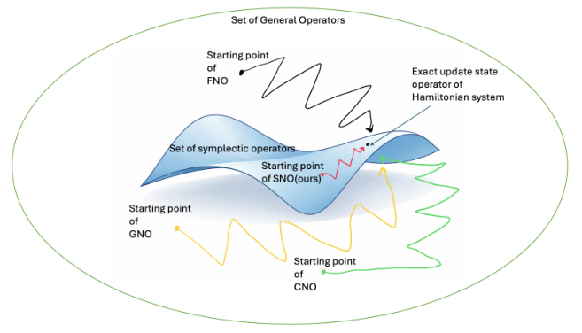
原图号 Figure 1；来源 main-v1，Symplectic Neural Operators for Learning Infinite Dimensional Hamiltonian Systems.pdf，PDF 第 1 页。原图注释义：通过辛约束构造更有效的假设类。
读法与组成。绿色外圈表示一般算子的集合；蓝色曲面表示其中的辛算子子集。黑色 FNO、黄色 GNO、绿色 CNO 曲线从集合中的不同起点出发；红色 SNO 路径从蓝色曲面上的起点出发，示意在满足辛约束的模型类内寻找目标。箭头指向精确 Hamiltonian 更新算子。没有横纵坐标、尺度、误差值或训练轮次，因此这是一幅概念示意图。
与方法的关系。第 1 节提出几何结构可作为归纳偏置；第 4.4 节通过梯度剪切映射的组合，把学习过程限制在辛映射类中。精确 Hamiltonian 流也保辛，因此图中目标被画在约束集合内。
支持与边界。图有助于理解“搜索空间受约束”的设计动机，却不能证明训练更快、样本更少或优化更容易。图上路径长度与距离不具备定量含义；论文没有以这幅示意图给出数据效率曲线。第 6 节反而明确指出组合式架构训练耗时更长。
Figure 2：波动方程前 25 步的短时预测
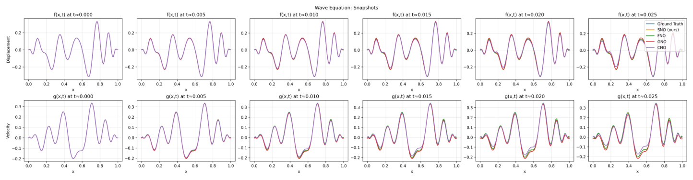
原图号 Figure 2；来源 main-v1，Symplectic Neural Operators for Learning Infinite Dimensional Hamiltonian Systems.pdf，PDF 第 7 页。原图注释义：波动方程前 25 个时间步内的位移与速度快照。
逐面板。上行是位移 f(x,t)，下行是速度 g(x,t)；两行的六列依次为 t=0,0.005,0.010,0.015,0.020,0.025。每个面板横轴为 x∈[0,1]，纵轴为对应场值。图例用蓝、橙、绿、红、紫分别表示参考解、SNO、FNO、GNO、CNO；图中的 f,g 对应正文的 q,p。正文第 5 节给出波速 c=0.05。
观察。初始列所有曲线重叠；随时间增长，各模型仍能重现波形的主要峰谷，位移行尤其接近。后几列的速度谷值已能看到小幅偏差，但远小于后续长时图中的分离。
支持与边界。这幅图支持“多种模型都能获得较好的短时视觉预测”，解释为何只看单步或很短的 rollout 容易错过结构性问题。它不能证明模型的数值误差完全相同、不能量化统计显著性，也不能单独证明长期保辛或能量稳定。应与图 3–6、表 3–4 一起阅读。
Figure 3：波动方程到 500 步时的模型分离
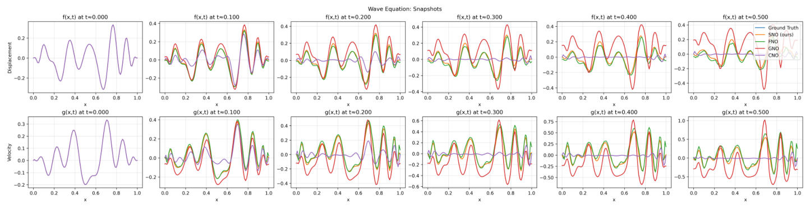
原图号 Figure 3；来源 main-v1，Symplectic Neural Operators for Learning Infinite Dimensional Hamiltonian Systems.pdf，PDF 第 8 页。原图注释义：波动方程前 500 步内的位移与速度快照。
逐面板。上行位移、下行速度；六列为 t=0,0.1,0.2,0.3,0.4,0.5。各面板以空间位置 x 对应场值，颜色含义与图 2 一致。观察同一列中相位、峰谷位置和振幅的差别，比只比对曲线是否光滑更有意义。
观察。SNO 大体保持参考解的峰谷位置与幅度。FNO 在此时窗仍保留主要形状，却逐步出现偏差；GNO 的红色曲线出现更强的额外峰谷和幅度增长；CNO 的紫色曲线显著衰减，后几列趋于接近零。速度面板同样显示长期误差的积累。
支持与边界。结果支持结构约束与较慢误差积累之间的一致性，且不同基线存在增长和耗散两类失真。第 5 节的“FNO 为次佳长期表现”在本图展示轨迹上可见。不能仅凭单条轨迹认定所有初值都如此，也不能把低振幅解释为物理耗散；这里的目标系统是 Hamiltonian 系统，耗散来自模型误差。
Figure 4：波动方程到 3000 步的更长时域
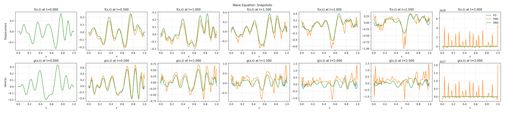
原图号 Figure 4；来源 main-v1，Symplectic Neural Operators for Learning Infinite Dimensional Hamiltonian Systems.pdf，PDF 第 8 页。原图注释义：波动方程前 3000 步内的位移与速度快照。
逐面板与图例变化。上行为 f(x,t)，下行为 g(x,t)；七列为 t=0,0.5,1.0,1.5,2.0,2.5,3.0。本图仅比较 FD 参考（蓝）、FNO（橙）、SNO（绿），颜色映射与图 2–3 不完全相同，且没有 GNO、CNO。每个面板独立缩放纵轴，不能把不同列的视觉高度直接当作相同振幅。
观察。随着时间延长，FNO 产生局部高频尖峰；到最后一列，其位移纵轴带 1016 量级标记、速度纵轴带 1017 量级标记，显示该轨迹的严重数值失稳。SNO 在前六列保持与 FD 较接近的形状。最后一列因 FNO 的极端振幅使纵轴范围巨大，SNO 与 FD 被压在接近零的视觉位置，不能在该列读取两者间的细小误差。
支持与边界。本图有力说明短期能预测的 FNO 仍可能在更长时域失稳，也支持 SNO 在这一特定更长轨迹上的稳定优势。但图注“3000 步”不是全部模型都完成了相同比较；本图不能说明 GNO、CNO 到 3000 步的结果。论文也未给出此时间窗内的多初值统计。
Figure 5：波动方程的相对误差与能量
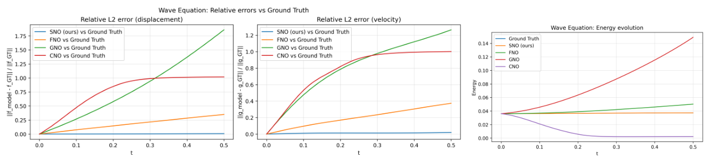
原图号 Figure 5；来源 main-v1，Symplectic Neural Operators for Learning Infinite Dimensional Hamiltonian Systems.pdf，PDF 第 8 页。原图注释义：相对 L2 rollout 误差及能量演化。
逐面板。左图为位移相对误差 ∥fmodel−fGT∥/∥fGT∥，中图为速度相对误差 ∥gmodel−gGT∥/∥gGT∥，横轴均为 0≤t≤0.5。这两面板以蓝、橙、绿、红分别表示 SNO、FNO、GNO、CNO。右图是能量随时间的变化，蓝为参考、橙为 SNO、绿为 FNO、红为 GNO、紫为 CNO；两类面板颜色含义应分开读取。相对范数是无量纲量，能量未标 SI 单位。
观察。SNO 的两条误差曲线接近横轴；FNO 稳定增长但明显较低；GNO、CNO 偏差更大，CNO 的误差接近单位量级并趋于平台。右图中 SNO 接近参考能量，FNO、GNO 出现增能，CNO 向接近零的能量衰减。
支持与边界。三面板联合说明，良好的能量行为与较低状态误差在该轨迹上同时出现；还能区分耗散性失真与增能性失真。这是第 5 节主要定量趋势的图示，但未带误差条，不能作为跨初值置信区间。保辛并不等于精确保原 Hamiltonian：第 4.5 节的理论是有条件的修正 Hamiltonian 近守恒，而非图中能量完全相等的保证。
Figure 6：波动方程的完整时空场
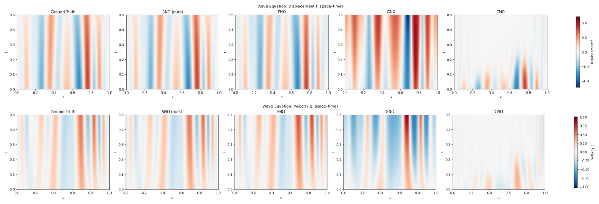
原图号 Figure 6；来源 main-v1，Symplectic Neural Operators for Learning Infinite Dimensional Hamiltonian Systems.pdf，PDF 第 8 页。原图注释义：位移场与速度场的时空分布。
逐面板。上排五图依次为参考、SNO、FNO、GNO、CNO 的位移；下排同样顺序展示速度。横轴 x∈[0,1]，纵轴 0≤t≤0.5，每排有对应场值色条。位移与速度色条不同，不能跨排按颜色深浅比较绝对幅度。
观察。参考、SNO 的条带走向、峰谷交替和整体幅度最接近；FNO 仍保持主要条带但逐渐偏移；GNO 的条带明显增幅并扭曲；CNO 的颜色随时间逐渐变白，反映场的衰减。速度排与位移排给出相互印证的趋势。
支持与边界。时空展示避免只挑某个“看起来好”的快照，补充了图 2–3 的动态形态证据。但颜色差异不是直接误差范数，不能替代表 3–4，也不能推导频谱、相速度或守恒量的精确误差。图中时间窗仍是 500 步，与图 4 的 3000 步比较不同。
Figure 7：一维 Maxwell 系统的能量演化
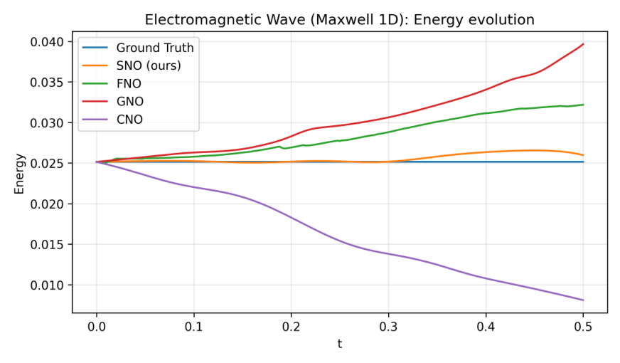
原图号 Figure 7；来源 main-v1，Symplectic Neural Operators for Learning Infinite Dimensional Hamiltonian Systems.pdf，PDF 第 19 页。原图注释义：一维 Maxwell 方程的能量演化。
读法。横轴为 0≤t≤0.5，纵轴 Energy。蓝、橙、绿、红、紫分别为参考、SNO、FNO、GNO、CNO。附录 B.3 的缩放一维系统以 E,B 为场，Hamiltonian 密度为 H=2c(E2+B2)；图中曲线应理解为场上的能量量，而不是某一个空间点的场值。
观察。参考近于常数，SNO 有轻微起伏但整体靠近参考；FNO 和 GNO 逐步增能，其中 GNO 增幅更大；CNO 明显耗散。趋势与波动方程图 5 相似。
支持与边界。支持 SNO 的较好能量行为可迁移到第二类 Hamiltonian PDE，未证明它精确保存能量，也未说明状态误差必然同样小。应结合图 8–12 及表 5–6；表 5 在较晚步数中 CNO 的平均状态误差反而更低，能量与状态指标需同时评估。
Figure 8：Maxwell 电场与磁场的快照
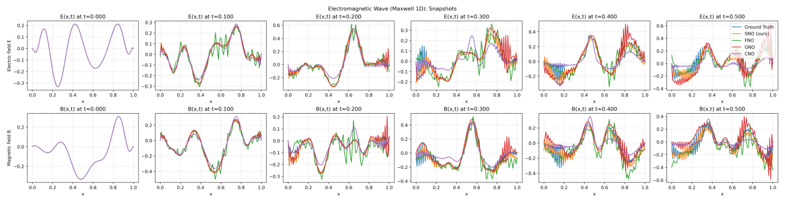
原图号 Figure 8；来源 main-v1，Symplectic Neural Operators for Learning Infinite Dimensional Hamiltonian Systems.pdf，PDF 第 20 页。原图注释义：一维电磁场前 500 步快照。
逐面板。上行 E(x,t)、下行 B(x,t)；六列为 t=0,0.1,0.2,0.3,0.4,0.5，横轴为空间 x∈[0,1]，纵轴为对应场值。蓝参考、橙 SNO、绿 FNO、红 GNO、紫 CNO。每列各自纵轴范围变化，需要按刻度辨认场幅度。
观察。SNO 保持较主要的低频形状，部分后期面板仍有可见偏差；FNO 与 GNO 出现局部高频振荡，GNO 的尖峰更明显；CNO 的波形被平滑并衰减。与图 7 一起看，振荡失真和能量漂移是不同角度的证据。
支持与边界。本图支持 SNO 在展示的时窗内较好保留电磁场形态，但不能声称对所有细节精确。它没有给出电场约束、Gauss 定律残差或边界条件误差，因此不能据此证明所有 Maxwell 物理约束均保存。
Figure 9：Maxwell 电场的时空结构
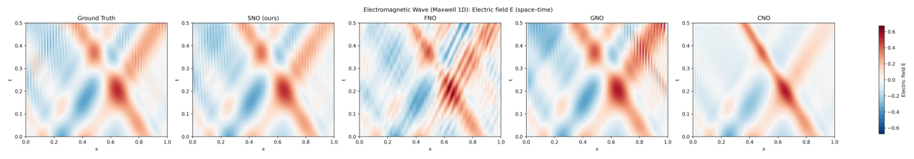
原图号 Figure 9；来源 main-v1，Symplectic Neural Operators for Learning Infinite Dimensional Hamiltonian Systems.pdf，PDF 第 21 页。原图注释义：Maxwell 一维电场的时空分布。
逐面板。从左到右为 Ground Truth、SNO、FNO、GNO、CNO 的 E(x,t)。横轴 0≤x≤1，纵轴 0≤t≤0.5，右侧色条表示电场值。沿时间方向比较传播条带的斜率、会合区域与高频纹理。
观察。SNO 最接近参考的主要传播与交汇结构；FNO 叠加明显细密的斜纹，GNO 后期局部增强，CNO 更光滑但缺失参考的部分纹理与幅度。SNO 在后期也出现轻微高频纹理，不能说无误差。
支持与边界。本图给出整段时域的电场形态证据，补充图 8 的离散快照。共享色条有利于定性对照，但从低分辨率颜色不能读取伪精确误差。图 11 可作为电场差值补充，图 12 复用该图，不能充当磁场的独立差值验证。
Figure 10：Maxwell 磁场的时空结构
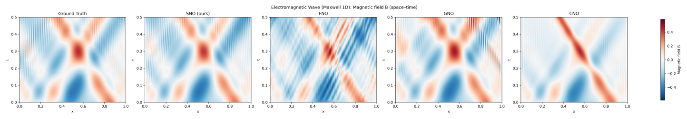
原图号 Figure 10；来源 main-v1，Symplectic Neural Operators for Learning Infinite Dimensional Hamiltonian Systems.pdf，PDF 第 22 页。原图注释义：Maxwell 一维磁场的时空分布。
逐面板。顺序仍为参考、SNO、FNO、GNO、CNO，但变量改为 B(x,t)。横轴空间、纵轴时间，场值由右侧色条给出；时窗 0≤t≤0.5。这与图 9 是两个状态分量的互补视角。
观察。SNO 的传播带与参考相近；FNO 出现高频斜纹；GNO 的局部场值增强，CNO 呈现更平滑、被削弱的结构。电场和磁场有相似的耦合传播形态，符合所用一维系统的定性结构。
支持与边界。支持 SNO 对磁场形态的保持优势，但不证明精确传播速度，也不单独验证辛性。要量化时空相位误差，需原始场数据及独立差值/范数，而不是从色图中估计精确数值。
Figure 11：Maxwell 电场误差，与图 12 原图重复
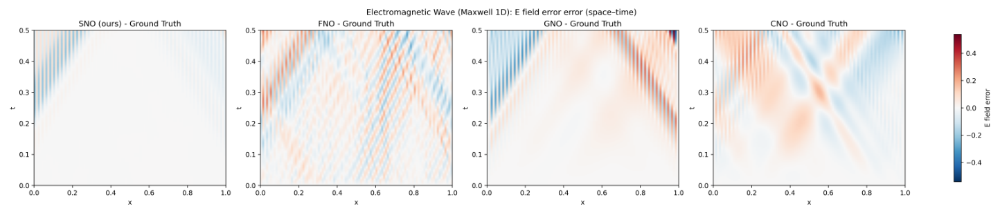
原图号 Figure 11；来源 main-v1，Symplectic Neural Operators for Learning Infinite Dimensional Hamiltonian Systems.pdf，PDF 第 23 页。原图注写作电场时空误差；高分辨率图内标题与色条均写作 “E field error”。
逐面板。四个面板依次为 SNO、FNO、GNO、CNO 减去参考解，横轴 x、纵轴 t，色条为有符号场差值。SNO 面板大部接近白色，FNO 有密集交错纹理，GNO 后期出现强偏差，CNO 展示系统性低频差值。
必须保留的原文问题。高分辨率核对发现本图与图 12 内容相同；PDF 中两处复用了同一个图片对象，图内标题均为电场 E 误差。本图图注与内部内容一致，但不能把这两幅图当作电场和磁场两个独立验证结果。磁场独立误差图尚无法从用户版本确认，需作者提供更正图或原始数据。
支持与边界。本图可说明展示的电场轨迹中 SNO 偏差较小。它无法支持磁场差值的专属结论，也无法支持两分量误差完全相同。原图复用是展示材料的问题，不能据此断言底层实验数据错误。
Figure 12：标为磁场误差，实际复用电场误差图
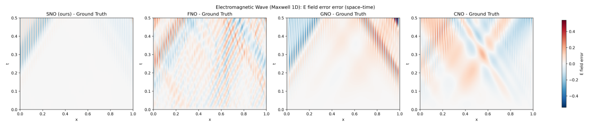
原图号 Figure 12；来源 main-v1，Symplectic Neural Operators for Learning Infinite Dimensional Hamiltonian Systems.pdf，PDF 第 23 页。原图注写作磁场时空误差，但图内写作电场误差，且与 Figure 11 共用同一原始图片。
逐面板。按内部标题，左至右分别是 SNO、FNO、GNO、CNO 的 Emodel(x,t)−EGT(x,t)，时间窗到 t=0.5。白色为接近零；蓝红偏差的符号相反，不能据红蓝面积互相抵消来判断 L2 误差。
观察。SNO 大部较接近零，后期和边界附近仍有斜纹误差；FNO 高频误差明显；GNO 的上半时窗出现更大的系统偏差；CNO 产生与场结构有关的低频差值。四面板共享色条，定性比较有意义。
支持与边界。图 12 的磁场图注与内部电场标题不一致，不能作为图 10 的独立差值补充；与图 11 的重复也不构成额外证据。它没有统计区间，且不展示到 1000 步，不能替代表 5–6 的平均状态/能量指标。
Figure 13：薛定谔方程前 50 步的能量
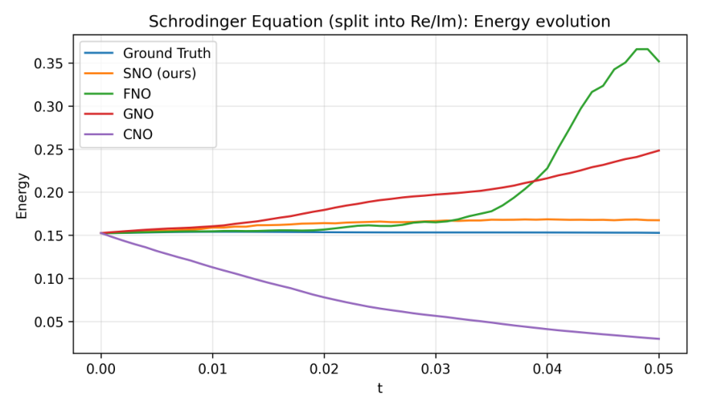
原图号 Figure 13；来源 main-v1，Symplectic Neural Operators for Learning Infinite Dimensional Hamiltonian Systems.pdf，PDF 第 24 页。原图注释义：薛定谔方程前 50 步能量演化。
读法。横轴仅到 t=0.05，不同于波动与 Maxwell 图的 t=0.5；纵轴 Energy。颜色是蓝参考、橙 SNO、绿 FNO、红 GNO、紫 CNO。附录 B.3 设 ℏ=m=1，将复波函数拆成实部与虚部。
观察。SNO 的能量缓慢偏移但接近参考；GNO 持续增能；CNO 明显衰减；FNO 前段接近参考，约后段开始迅速增能。该短时窗已暴露基线的不同失败模式。
支持与边界。可支持这一展示轨迹前 50 步中 SNO 的较好能量行为，却不能外推为薛定谔系统长时普遍稳定。表 8 到第 1000 步时 SNO 平均相对能量误差显著增长，正说明本图窗口有限。原文未在本图展示波函数范数守恒，能量表现不能代替概率归一性检查。
Figure 14：薛定谔波函数实部、虚部的短时快照
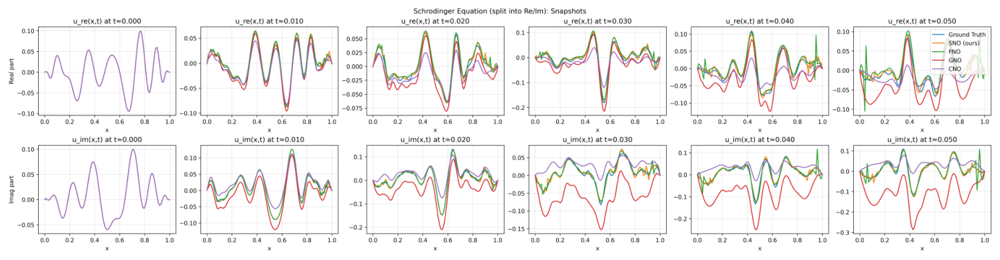
原图号 Figure 14；来源 main-v1，Symplectic Neural Operators for Learning Infinite Dimensional Hamiltonian Systems.pdf，PDF 第 24 页。原图注释义：前 50 步波函数实部与虚部快照；原图注有 “aprt” 排字错误。
逐面板。上行为 ure(x,t)=Reψ(x,t)，下行为 uim(x,t)=Imψ(x,t)；六列是 t=0,0.01,0.02,0.03,0.04,0.05。横轴 x∈[0,1]，纵轴为相应波函数分量；蓝、橙、绿、红、紫仍为参考、SNO、FNO、GNO、CNO。
观察。SNO 在主要峰谷及相位上较接近参考；FNO 后期有明显局部振荡；GNO 的虚部偏差尤其明显；CNO 逐渐削弱场幅度。每列纵轴自适应，判断增长时应结合图 13 的全局指标。
支持与边界。与能量图联合表明，结构约束在这一时窗同时帮助保存两个状态分量的形态。实部与虚部不是两个互相独立的物理实验；它们共同表示同一复波函数。本图没有直接给出概率密度 ∣ψ∣2、整体相位误差或归一化残差。
Figure 15：薛定谔波函数实部的时空图
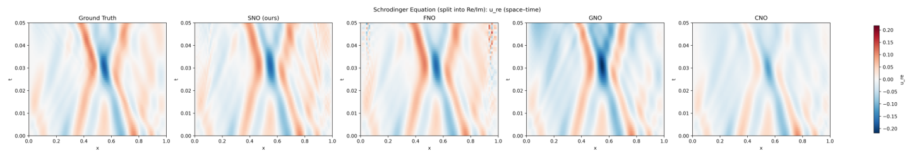
原图号 Figure 15；来源 main-v1，Symplectic Neural Operators for Learning Infinite Dimensional Hamiltonian Systems.pdf，PDF 第 24 页。原图注释义：波函数实部的时空分布。
逐面板。依次展示参考、SNO、FNO、GNO、CNO 的 ure，横轴空间、纵轴 0≤t≤0.05，右侧为实部场值色条。观察弯曲传播条纹在不同时间的相位位置，而不是只看颜色是否相似。
观察。SNO 的纹理与参考接近；FNO 后期边界附近有细密高频结构；GNO 的局部区域颜色增强或移动；CNO 更平滑并降低振幅。图 14 中快照偏差在连续时域中可见。
支持与边界。说明展示窗口内的实部分布具有较好的形态保持。它不显示更长时域，不提供跨分辨率测试，也不能从相近色块推断精确相位误差；对应有符号差图见图 17。
Figure 16：薛定谔波函数虚部的时空图
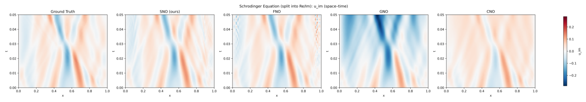
原图号 Figure 16；来源 main-v1，Symplectic Neural Operators for Learning Infinite Dimensional Hamiltonian Systems.pdf，PDF 第 24 页。原图注释义：波函数虚部的时空分布。
逐面板。顺序为参考、SNO、FNO、GNO、CNO；变量是 uim。横轴 x，纵轴 0≤t≤0.05，色条表示有符号虚部值。与图 15 对照时应读取各自色条，不能默认两个分量使用同一幅度标尺。
观察。SNO 保留参考的正负交替结构；FNO 在右边界后期产生高频纹理；GNO 出现较大负偏移；CNO 的主要结构衰减。虚部的差异比实部更明显，对应图 14 下行的失真。
支持与边界。两个分量的联合图示比单看能量更完整；仍然只能说明展示的时窗和轨迹。它无法证明复值模型的一般适用性，也未报告整体波函数相位对齐是否在误差计算前处理。
Figure 17：薛定谔实部的有符号误差
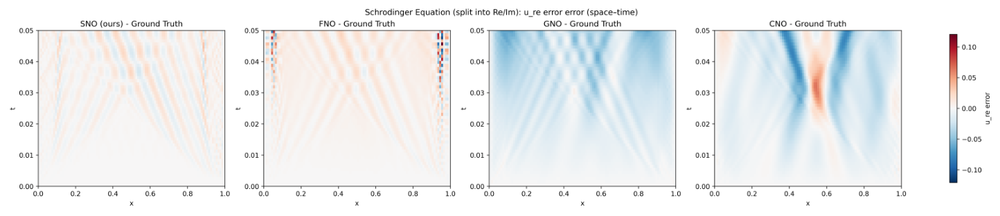
原图号 Figure 17；来源 main-v1，Symplectic Neural Operators for Learning Infinite Dimensional Hamiltonian Systems.pdf，PDF 第 25 页。原图注释义：实部的时空误差。
逐面板。从左至右为 SNO、FNO、GNO、CNO 的 ure,model−ure,GT。横轴 x、纵轴 t≤0.05，共享色条为实部差值。差图直接揭示图 15 场值热图较难辨认的细小偏差。
观察。SNO 与 FNO 的主体区域差值较浅，两者都有随时间累积的条纹；FNO 右边界上方出现局部高频偏差；GNO 有系统性负偏差，CNO 在特定空间区域出现更强的正负结构。仅说“SNO 完全无误差”与本图不符。
支持与边界。可定位不同模型的误差形态和局部位置，支持 SNO 整体偏差较小的定性读法。共享色条可能让非常局部的峰值不显眼，且正负误差不能相互抵消后当作范数；应结合表 7 的状态误差。
Figure 18：薛定谔虚部的有符号误差
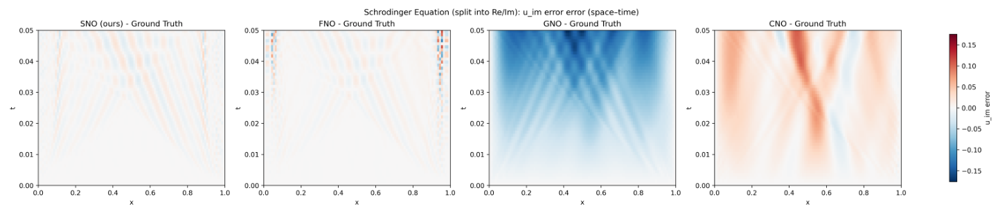
原图号 Figure 18；来源 main-v1，Symplectic Neural Operators for Learning Infinite Dimensional Hamiltonian Systems.pdf，PDF 第 25 页。原图注释义：虚部的时空误差。
逐面板。四列依次为 SNO、FNO、GNO、CNO 的 uim,model−uim,GT，坐标为 x,t，时窗到 t=0.05。色条表示虚部有符号差；与图 17 的色条范围不相同，不能跨图按饱和颜色直接排序。
观察。SNO 主体较浅，仍有条纹误差；FNO 的边界高频异常更加明显；GNO 出现广泛负偏差，CNO 展示较大正偏差及结构性错位。这解释了为何某些模型即使保持光滑曲线，仍可能具有较大状态误差。
支持与边界。本图是图 16 的直接差值补充，在短时窗口内支持 SNO 的形态精度优势。但前 50 步的误差图不能覆盖表 7–8 的 1000 步结局，尤其不能回避 SNO 在更晚时域的均值和离散性恶化。
Figure 19：非线性 Klein–Gordon 能量，图注与图例不一致
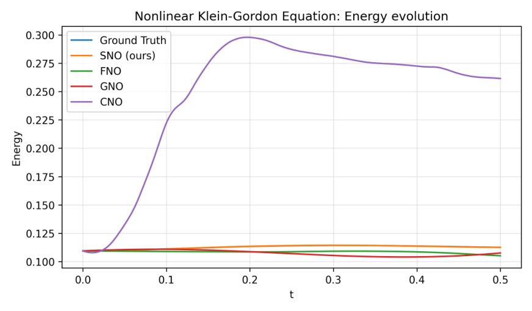
原图号 Figure 19；来源 main-v1，Symplectic Neural Operators for Learning Infinite Dimensional Hamiltonian Systems.pdf，PDF 第 25 页。原图注称 FNO 快速增能并最终发散、SNO 接近 FD 参考；该说法与此图可见内容有错配。
读法。横轴 0≤t≤0.5，纵轴 Energy。图内图例是蓝参考、橙 SNO、绿 FNO、红 GNO、紫 CNO。附录 B.3 的非线性系统包含 q3 力项，相应 Hamiltonian 势项有负号；不能把场振幅与总能量简单等同。
按实际曲线观察。SNO 贴近参考，FNO 与 GNO 在这一轨迹中能量变化较小；紫色 CNO 快速升至较高能量后回落/缓慢变化。所示窗内没有可见的无界发散。因此图 19 支持 SNO 的能量保持优势和 CNO 的较大漂移。
必须区分的证据。原图注把主要增长模型写作 FNO，但增长最明显的曲线按图例应为 CNO；“eventual blow-up”也未由本图时窗展示。本报告不擅自修改原图，不把图注错误当作数据本身已被证明错误。表 10 中 FNO 到更晚步数平均能量误差较大，可能来自其他初值，但不能用表格替本图纠正具体曲线身份；需要作者更正或代码/数据核验。
Figure 20：非线性 Klein–Gordon 的位移、速度快照
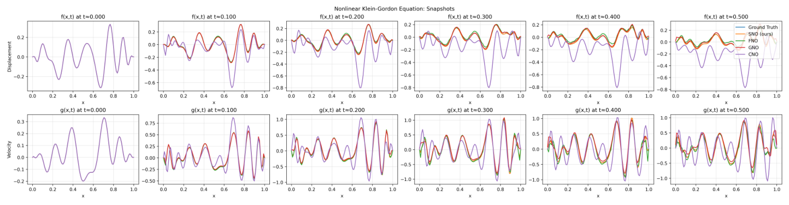
原图号 Figure 20；来源 main-v1，Symplectic Neural Operators for Learning Infinite Dimensional Hamiltonian Systems.pdf，PDF 第 25 页。原图注释义：代表时刻的位移与速度快照。
逐面板。上行 f(x,t) 为位移，下行 g(x,t) 为速度；六列为 t=0,0.1,0.2,0.3,0.4,0.5。横轴 x∈[0,1]，纵轴为分量场值；蓝参考、橙 SNO、绿 FNO、红 GNO、紫 CNO。
观察。SNO 最接近参考的峰谷形态。FNO 与 GNO 逐渐偏离，但此图轨迹的失真没有 CNO 强；CNO 位移显著反相/错位且振幅改变，速度分量也产生相位与幅度误差。上、下两行共同说明偏差并非只出现在单个分量。
支持与边界。支持 SNO 在非线性基准中的较好状态保持，与图 21–25 互相对应。不能从六个时刻直接推导系统在全连续时间上的严格有界性；图中没有展示随机初值集合或多次训练变异。还应注意图 19 图注的模型身份问题。
Figure 21：非线性 Klein–Gordon 位移时空场
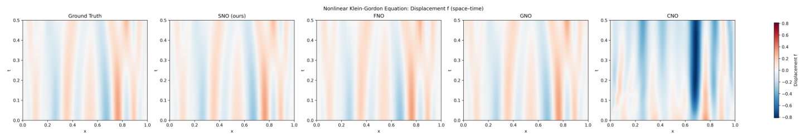
原图号 Figure 21；来源 main-v1，Symplectic Neural Operators for Learning Infinite Dimensional Hamiltonian Systems.pdf，PDF 第 26 页。原图注释义：非线性 Klein–Gordon 位移的时空分布。
逐面板。依次为参考、SNO、FNO、GNO、CNO 的 f(x,t)。横轴空间，纵轴 0≤t≤0.5，右侧色条表示位移场值。可比较各条带位置随时间改变的方式及正负区域的幅度。
观察。SNO 与参考最接近，FNO、GNO 有较轻的条带位置和振幅变化；CNO 在后期出现大面积相反或过强的场值结构。与图 20 上行快照及图 24 差图的模式一致。
支持与边界。支持展示轨迹的位移形态保持优势，但不能直接识别误差来自学习映射的哪一层；需要消融和频谱诊断才能判断具体机制。单色条比较也不能替代表 9 的跨初值平均状态误差。
Figure 22：非线性 Klein–Gordon 速度时空场
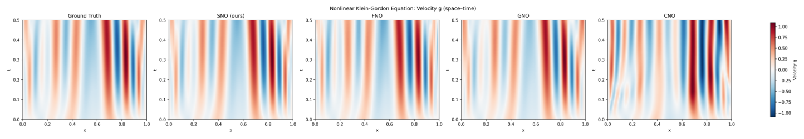
原图号 Figure 22；来源 main-v1，Symplectic Neural Operators for Learning Infinite Dimensional Hamiltonian Systems.pdf，PDF 第 26 页。原图注释义：非线性 Klein–Gordon 速度的时空分布。
逐面板。顺序为参考、SNO、FNO、GNO、CNO 的 g(x,t)，横轴 x，纵轴 t≤0.5，颜色表示速度。速度色条与位移图 21 不同，不能直接跨图按颜色比较两个分量的误差。
观察。SNO 保留参考主要条带；FNO、GNO 出现一定偏差；CNO 展示更明显的条带错位、局部幅度变化。即使某些颜色仍鲜明，曲线可能处于错误相位，故“场仍有振荡”并不等于预测正确。
支持与边界。与图 21 一起构成两个共轭分量的时空检查，进一步支持 SNO 的轨迹形态保持。图中没有显示系统的空间分辨率转移、不同波速或不同非线性参数，不能由此声称参数或网格外推能力已经验证。
Figure 23：非线性 Klein–Gordon 的两分量相对误差
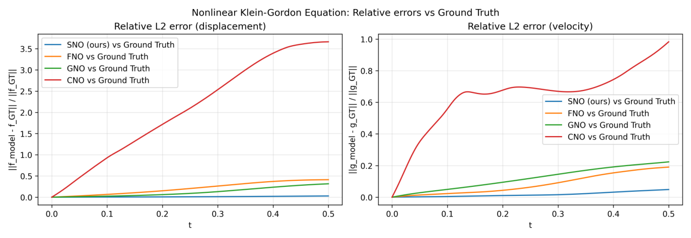
原图号 Figure 23；来源 main-v1，Symplectic Neural Operators for Learning Infinite Dimensional Hamiltonian Systems.pdf，PDF 第 26 页。原图注释义：位移与速度相对 L2 rollout 误差；作者将较低增长归因于 SNO 的自伴与辛结构设计。
逐面板。左为 ∥fmodel−fGT∥/∥fGT∥，右为 ∥gmodel−gGT∥/∥gGT∥，横轴 t∈[0,0.5]。蓝、橙、绿、红分别代表 SNO、FNO、GNO、CNO；两个面板纵轴尺度不同，误差均为无量纲相对量。
观察。SNO 两分量误差最低且增长缓慢。FNO 与 GNO 的位移误差逐渐累积；速度误差中两者排序与位移未必相同。CNO 位移误差超过单位量级，速度误差也显著更高并有非单调变化。
支持与边界。相较仅靠热图，本图直接支持展示轨迹中 SNO 状态误差较低。图注使用 “significantly” 但曲线没有误差条或假设检验，报告应读作幅度上明显的差别而非统计显著性。它不能独立证明自伴约束是唯一因果来源；论文没有隔离该机制的消融实验。
Figure 24：非线性 Klein–Gordon 位移差图
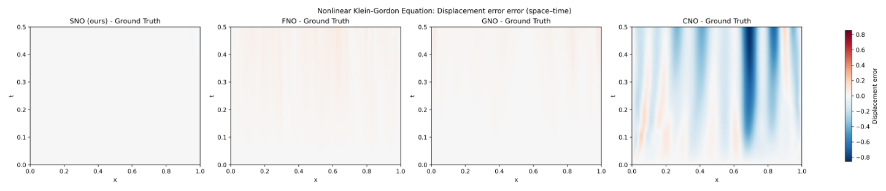
原图号 Figure 24；来源 main-v1，Symplectic Neural Operators for Learning Infinite Dimensional Hamiltonian Systems.pdf，PDF 第 26 页。原图注释义：相对参考解的位移时空误差。
逐面板。四列分别为 SNO、FNO、GNO、CNO 的 fmodel−fGT，横轴 x，纵轴 0≤t≤0.5，共享色条为位移有符号差。原图注用 “relative to ground truth” 表示与参考相比；图内实际展示差值，而非除以参考值的逐点相对误差。
观察。SNO 大部接近零；FNO 与 GNO 有浅色、随时间积累的结构；CNO 出现强烈红蓝条带，显示相位与幅度误差共同形成的空间偏差。图 23 左图的高相对范数在此被定位到具体时空区域。
支持与边界。可支持 SNO 的局部位移误差较小；共享的大色条范围会压缩其他模型的小误差，浅色不等于精确为零。误差图也没有显示可重复性统计或能量指标，不能单独说明长期守恒。
Figure 25：非线性 Klein–Gordon 速度差图
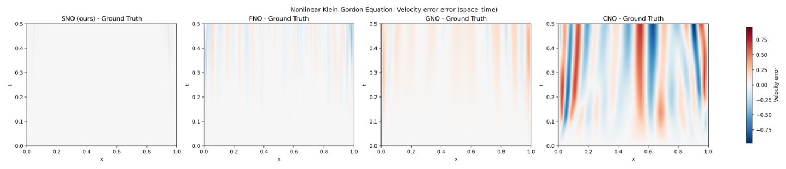
原图号 Figure 25；来源 main-v1，Symplectic Neural Operators for Learning Infinite Dimensional Hamiltonian Systems.pdf，PDF 第 26 页。原图注释义：相对参考的速度误差，作者认为 SNO 显示较好的长期稳定性。
逐面板。四列为 SNO、FNO、GNO、CNO 的 gmodel−gGT，横轴 x、纵轴 t≤0.5，色条表示速度差。与图 24 一样，这是有符号差值图而非误差范数，也不是逐点归一化的相对误差。
观察。SNO 主体区域最接近零；FNO 与 GNO 出现幅度较小的累积条纹；CNO 显示大幅、错位的红蓝结构。速度的局部变化比位移更尖锐，两个分量应分别检查。
支持与边界。本图与图 20、22、23 形成相互对应的状态证据。原图注的“长期稳定性”应限定为所示时间窗和论文平均表格覆盖范围，不能据此证明任意时长、任意初值稳定。理论定理的额外正则性、Hamiltonian 扰动与 BCH 条件仍需独立核验。
返回报告顶部
可信度与局限：可以接受什么，还需要核验什么？
架构思想有价值，证据链仍有断点
作者自述：剪切组合导致训练时间更长；强 canonical Hilbert 相空间之外的弱辛流形需要新构造；Hamiltonian 误差表示与 BCH 条件的普遍成立性仍待研究。（§6，PDF 页 9。）这些限定应与摘要的“rigorous long-term stability”一起阅读。
阅读者审查：定理 4.8 的点态二阶导数有界不足以保证梯度映射在整个 L2 上 Fréchet 可微。前文理论审查给出满足其列明假设的尖峰扰动反例。这是一般定理表述的问题；它没有证明有限网格上的 SNO 不能辛，也没有否定加上平滑性或更强函数空间条件后的构造。
定理 4.10 的误差参数描述一个受控 Hamiltonian 扰动族。有限训练数据的一步平均误差、未见状态的统一范数误差、误差生成 Hamiltonian 的高阶展开，是不同层次的要求。本文没有从训练损失推导后两者，也没有测量 BCH 余项。因此实验与定理方向相容，但并未验证定理的全部前提。（§3、§4.5、A.7，页 4–7、15–17。）
状态准确、能量接近与有界性必须分开评价
Maxwell 中 CNO 后期状态误差更小，但能量误差仍很大；Schrödinger 中 SNO 的平均能量误差到 1000 步急剧增大。Klein–Gordon 的 SNO 能量误差在 1000 步仍较小，而状态误差接近 1。这些例子分别说明：基线相对表现依指标而变，结构保持不排除晚期失效，能量维持也不能替代波形／相位精度。（表 5–10，页 20–23。）
原文给出的 Klein–Gordon Hamiltonian 势能为负的二次与四次项，所以能量并非自动控制状态范数。定理又预先要求轨道留在控制区，不能从该定理单独推出本模型的全局状态有界或无爆破。（B.3，页 19；定理 4.10，页 7。）
对照不足限制了“为什么更好”的解释
论文匹配约 230 万参数，确实减少了一项容量混杂；但没有剪切层数、自伴约束、梯度构造、一步误差匹配的消融，也没有 SympNet 网格基线、经典辛积分器或能量正则基线。四类模型在实现、训练设置和单步精度上的差别可能同时影响长期表现，尚不能量化辛结构单独贡献多少。（B.2，页 18；公开代码静态核查见后文。）
原表的标准差来自 10 个随机初值，并非 10 个独立训练种子；平均数和标准差也不能恢复失败轨道的数量。论文没有报告训练硬件、墙钟对照、推理延迟或盈亏平衡调用次数，因而“快速代理”是合理用途设想，尚缺完整成本验证。
原图和原表中的具体一致性问题
- 表 5 的后期最优加粗与实际数值不一致：500–1000 步 CNO 状态误差均低于 SNO。（页 20。）
- 图 11 与图 12 在 PDF 中复用同一图像对象，高分辨率图内标题和色条均是电场误差；图 12 的磁场误差图注无法据此获得独立视觉支持。（页 23。）
- 图 19 图注明称 FNO 快速增长并发散，但图例对应的快速上升曲线为 CNO；图内所示时间窗也未展示发散。（页 25。）
- Schrödinger Hamiltonian 密度与演化式的势能系数需要明确复变量／实变量辛形式的约定；公开代码又使用另一系数且没有势能，不能视为已完成版本一致性验证。（页 18；代码审查。）
以上问题均在报告保留原图和原数值后明确指出。没有根据图注重绘曲线，也没有把代码当作修正 PDF 的依据。
可以借鉴的做法与迁移条件
把几何约束落实为可逆的更新块
借鉴对象：上下交替的梯度剪切。它把结构约束从额外损失项变成架构约束，同时给出显式逆映射。适合可以找到 canonical 配对状态的保守演化代理；若系统含耗散、驱动或约束，先确认目标流保留的结构，不能直接强迫它辛。（§4.1、§4.4，页 5–6。）
迁移步骤：先确定相空间内积和离散积分权重；再按该内积构造伴随；在小网格上用 Jacobian 或随机切向量验证辛缺陷与逆映射误差；之后才扩展训练与多网格评估。资源成本主要是相空间变量转换、伴随实现和额外网络评估。失败点包括非 canonical 变量、边界投影、非均匀网格的权重不匹配，以及不满足所需光滑性的点态非线性。
用标量势的梯度控制非线性导数
借鉴对象：G(u)=K∗∇Φ(Ku)。核心是输入输出线性映射成伴随配对，非线性来自标量势梯度，形式导数因此具有对称结构。多通道问题不能简单用一个任意向量 MLP 代替梯度；单通道点态 MLP 可以通过原函数解释，但函数空间正则性仍需要独立验证。（§4.3，页 6；代码 SNO 更新。）
迁移步骤：选择势网络或解析梯度，限制其必要导数；明确 K 是否带来平滑性；验证模型梯度与所用内积一致；比较实际反向传播开销。若采用自动微分生成势梯度，训练可能需要更高阶导数，显存与时间应实测。不能只因为 Hessian 在离散网格上对称，就认为一般无限维 Fréchet 可微性已经解决。
同时保留轨迹误差与守恒量误差
借鉴对象：一步训练、长时自由滚动、能量与状态双指标。其有效性来自暴露训练目标不能直接约束的累积误差。迁移时应额外报告不同轨道的分位数、失败比例、相位误差与守恒量绝对误差，并核查能量分母。成本相较重新训练较低，主要是足够长的可信参考轨迹；若参考求解器自身长期漂移，所有模型的守恒判断都会受影响。（B.1、B.4，页 17–23。）
用结构先验改善学习，同时测试其限制
图 1 的假设空间示意适合指导实验，但不是数据效率证明。真正迁移时，应把小数据优势与模型失配一起测量：相同参数量、相同训练预算和近似匹配的一步误差下，增加初值幅度、频谱与空间分辨率。如果目标系统本身不保守，强先验可能产生系统偏差；结果好坏都应反过来检验先验与物理是否吻合。
后续研究：从可复核的问题出发
作者提出的方向是训练效率、弱辛相空间推广以及更明确的 modified-Hamiltonian 条件（§6，页 9）。以下是阅读者提出的可检验方案；并未检索这些方向的新颖性，不宣称它们尚无人研究。
优先一：修复正则性条件，并连接离散模型与连续模型
原文动机：定理 4.8 的 L2 可微性缺口与 torus／Dirichlet 设置差异。假设：加入 K:L2→L∞ 的有界平滑条件，可以修补所需可微性。另一途径是选择嵌入 L∞ 的 Sobolev 空间，例如 Hs、s>n/2，但还须验证算子与所用伴随在该空间有界、非线性具有复合映射所需的足够光滑性，并重新匹配辛结构。
最小研究：先给尖峰反例做解析检验；分别推导纯点态通道、有限 Fourier 投影、带平滑滤波的 K 的充分条件；在三种网格上使用同一参数测试自伴与辛缺陷。基线：原文一般有界 K 构造及有限维 Jacobian 验证。指标：归一化 Fréchet 余项、加权辛缺陷、跨分辨率状态误差。
判定：成功需要在明确函数空间上证明余项随扰动范数消失，并给出离散一致性条件；若存在 hj→0 的集中扰动序列而归一化余项不趋零，便否定该条件集。固定网格的 Jacobian 辛性不能替代连续可微性证明；跨网格检查用于离散一致性，还需验证平滑算子范数随网格一致有界。资源与风险：数学推导为主，小型 CPU／GPU 检验即可；主要风险是平滑条件收窄表达能力或边界处理破坏结构。
优先二：解释 Schrödinger 的晚期能量失效
原文动机：表 8 的 1000 步平均相对能量误差为 170.42±538.05，图 13 却只显示早期。假设：少量失败轨道、高频误差增长、边界漂移或能量定义差异之一主导平均误差，而不是所有初值均匀恶化。
最小实验：在核对 Hamiltonian 和代码版本后，用固定 100 个初值、至少三个独立训练种子，保存 2000 步内逐轨道结果。基线：SNO、FNO、CNO，以及同一半离散系统的可信结构保持求解器。指标：能量绝对／相对误差的中位数和高分位数、质量误差、边界值、高频谱、状态误差与失败率。
判定：若大部分误差集中于少数轨道并与同一诊断异常同步，支持关联；机制判断还需固定种子与参考解，单独干预能量实现、边界或高频成分，并与对应消融比较。若绝大多数轨道共同漂移，则否定“仅极少数离群点”解释。针对候选机制的修正必须在保留数据上同时降低能量误差和状态误差。资源与风险：几组约 230 万参数模型，成本需先实测；缺少原权重意味着不能直接重现原表，需要重新训练并保持与原结果的区别。
优先三：量化辛约束的贡献与成本
原文动机：没有对应消融，也没有训练／推理成本表。假设：在一步误差和训练预算相近时，梯度剪切仍能降低长期漂移；其额外训练成本能由多次调用摊销。
最小实验：先做波方程与 Klein–Gordon，比较完整 SNO、不配对输出算子 K2g(K1u)、普通残差 FNO、能量正则 FNO；固定参数量、数据和种子，并报告训练曲线。单通道光滑 MLP 总有原函数，换一个标量 MLP 不能作为“去梯度”消融；若要分开测试非线性梯度约束，需增加多通道状态并比较标量势梯度与无约束向量非线性，这会增加容量匹配难度。指标：匹配的一步误差、长时状态误差、辛缺陷、能量误差、训练 GPU 小时、每步延迟与显存。成本盈亏平衡需要比较 Ttrain+MTsurrogate 与 MTsolver，其中 M 是部署调用次数。
判定：若匹配精度后辛约束仍显著改善长时指标，且重复种子下趋势稳定，支持结构作用；若差异消失或成本无优势，则否定对应应用中的收益主张。资源与风险：多组训练为主要开销；匹配参数量并不保证表达能力完全一致，因此结论需对一步精度与预算同时分层。
优先四：测试跨网格与初值分布泛化
原文动机：架构声称 mesh-independent，但论文没有跨网格实验和样本数消融。假设：正确匹配内积、边界和伴随后，同一 SNO 参数在网格细化时仍维持较小结构缺陷，且在小数据训练时有更好长期预测。
最小实验：固定训练网格，在更粗与更细的三种网格上原样调用；另用三档训练样本量和两档未见频谱／幅度。基线：同预算 FNO、CNO 和重新训练的细网格模型。指标：按物理积分权重计算的误差、能量与辛缺陷，初值幅度／频谱分层失效率。
判定：成功需要测试网格变化时结构缺陷受控，且不依赖重新训练获得优势；若只在训练网格有效，便否定当前构造的实际跨网格收益。资源与风险：数据生成与多网格参考解为主要开销；FFT 模态截断、非均匀采样和 Dirichlet 扩展策略可能引入额外误差。
较长期：面向非 canonical 或弱辛 PDE
原文动机：§2 讨论弱辛 Darboux 失效，§6 明确列为未来工作；Maxwell 场变量的结构也需要说明。假设：在某个明确 PDE 的约束叶或可证明有效的局部坐标中，能够定义与真实结构一致的学习更新。
最小研究：先选择一个有已知 Poisson／辛结构与边界条件的具体模型，推导状态转换和逆变换，随后比较普通算子、强 canonical SNO 和与该结构匹配的模型。指标：目标结构缺陷、约束误差、相关守恒量、预测误差与坐标有效域。判定：只有结构保持与坐标适用范围均被证明并测量，才算支持推广；局部坐标离域或约束违背便否定该实现。资源与风险：需要较强几何分析工作，不适合作为仅替换网络层的快速扩展。
公开代码静态核验：补充了设置，也暴露了版本差异
访问日期为 2026-10-01。论文给出的 SNO-216D 公开代码仓库显示 source commit 日期为 2026-02-09，下载包包含 36 个文件，README 只有项目标题。本报告只静态阅读四个系统的数据、SNO、FNO、GNO、CNO 与主要评估脚本，没有执行外部代码、生成数据、训练模型或复现表格。没有可用于把当前代码快照与 2026-05-18 PDF 数字一一绑定的实验日志或模型权重。因此，下面是“当前可访问代码的证据”，不能改写成“PDF 已报告的设置”。
能从代码补出的训练与评估设置
| 项目 | 当前代码 | 定位与限制 |
|---|
| 网格／时间步 | 各系统数据脚本默认 Nx=100、端点包含的均匀网格，Δx=1/99。波动和 Maxwell 数据步长为 1/999，因为时间网格由含端点的 1000 点构造；Schrödinger 与 Klein–Gordon 数据默认为 0.001。主要评估脚本均设 Δt=0.001。 | sim/data/simple-wave.py 第 9–16 行；em/data/em-wave.py 第 5–12 行；sch/data/data.py 第 8、31 行；kgd/data/data.py 第 8、32 行；各 test_all_trained_model.py 设置区。波动／Maxwell 存在约 0.1% 的训练目标与测试参考步长差，尚未确认论文使用了哪一个版本。 |
| 初态频谱与幅值 | 数据默认 Chebyshev 最高次数：波动／Schrödinger／Klein–Gordon 为 20，Maxwell 为 100。波动和 Maxwell 仅在最大幅值超过 1 时缩放；Schrödinger 与 Klein–Gordon 总是按最大幅值归一化。评估 Maxwell 次数降为 10；波动／Maxwell／Klein–Gordon 评估场再除以 3，Schrödinger 再除以 10。 | 各数据脚本的 MAX_CHEBYSHEV_DEGREE、random_func_T；各 test_all_trained_model.py 的随机初态与 trial 循环。代码显示训练与测试分布不同，不能把 PDF 中“统一流程”理解成所有系统完全相同的初态频谱与幅值。 |
| 划分、优化与损失 | 四种模型训练脚本采用单步对的 80%／20% 随机划分，random_state=42；Adam、学习率 10−3、批大小 8、MSELoss。每轮监控名为 test 的 20% 划分，未另设验证集。数据生成和模型训练脚本未固定 NumPy／PyTorch 随机种子；主要 rollout 评估脚本固定种子 0，10 个随机初态。 | 各模型训练文件的 load_wave_data 与训练区，主要评估脚本的 RNG 区。划分种子不等于模型初始化、数据生成与训练过程完全可复现。尚不知 PDF 的结果是否由这些默认值产生。 |
| 训练轮数与权重版本 | SNO 四个系统均默认训练 500 轮；FNO／GNO／CNO 的 Maxwell 默认 500 轮，其余系统默认 100 轮。波动、Klein–Gordon 的表格评估脚本加载全部模型的第 100 轮权重；Maxwell 和 Schrödinger 表格评估脚本加载第 500 轮权重。 | sim/SNO.py 第 191 行及各训练 EPOCHS／epochs；各评估 CHECKPOINT_*。Schrödinger 基线训练默认停止于 100 轮，却要求 500 轮文件，当前包不能按默认设置直接闭合复现链。不能仅据 SNO 训练 500 轮就断言论文波动比较使用了更多训练，因为评估指定了第 100 轮。 |
代码中的指标定义，比 PDF 更明确
四个主要表格评估脚本的状态误差都是将两分量的离散欧氏范数组合：
estate=∥qmodel−qFD∥22+∥pmodel−pFD∥22.
这里没有相对归一化，也没有乘 Δx。因此代码计算的是网格向量的绝对 ℓ2 误差，数值随网格点数变化；不能直接当作连续 L2 范数或百分误差。变量名在 Maxwell／Schrödinger 分别替换为电磁场／实虚部。相对能量误差用同一时刻 FD 参考能量：
eenergy=∣EFD∣+10−12∣Emodel−EFD∣.
波动、Schrödinger 和 Klein–Gordon 的能量计算通过 numpy.gradient 求所需空间导数；Maxwell 直接使用场平方。各系统均以求和乘 Δx 积分。均值与标准差是 10 个初态上的样本统计，标准差采用 ddof=1。这补充了可访问代码的实际定义，但没有权重和输出日志，仍不能确认 PDF 表格的每一行都来自此脚本。（各 test_all_trained_model.py 的 l2_state_error、calculate_energy、energy_error、summarize）
与论文版本对应不清楚的关键处
| 问题 | 静态检查发现 | 对论文解读的影响 |
|---|
| Schrödinger 方程与能量不同 | sch/data/data.py 第 35–36 行及 sch/test_all_trained_model.py 第 139–140 行实际写 ∂tReψ=−0.1D2Imψ、∂tImψ=0.1D2Reψ，没有势函数。代码对应 iψt=−0.1ψxx，而 PDF 写 −21ψxx+Vψ。能量实现为 0.05∑j(∣DReψ∣2+∣DImψ∣2)Δx。 | 当前代码不是 PDF 表述的同一系数模型；不存在用当前默认设置补出 V(x) 的依据。SNO 短时和失效结果都需要明确对应哪个 PDE 后再复现。 |
| Schrödinger 剪切块数不同 | sch/SNO.py 第 150–153、163–184 行有 4 个剪切块，PDF B.2 写 3 个。波动 3、Maxwell 6、Klein–Gordon 5 与 PDF 对得上。 | 不能确认当前 Schrödinger 网络就是表 7–8 使用的模型；即使重跑也应标为当前代码版本的结果。 |
| “匹配通道与深度”的声明不能由默认代码验证 | 波动 SNO 的默认内部宽度为 110、每个自伴线性块 4 层；波动 FNO 宽度 160，其他 FNO 170；GNO 隐藏通道 256、7 层；CNO 宽度 128、深度 5。SNO 宽度随系统变为 62、94、84。 | 模型结构不同确实可能需要不同宽度才能匹配参数量，但它们不是相同通道数和相同深度。代码中的参数打印未附实际输出，无法验证“各约 230 万”与统计口径是否一致。 |
| Klein–Gordon 有两套能量函数 | kgd/data/data.py 第 48 行的辅助 calculate_energy 用正势 +q2/2+q4/4，与其演化 +q+q3 不符；但是表格和绘图评估脚本均用负势 −q2/2−q4/4，与 PDF 一致。 | 需要统一代码中的辅助函数，但不能据这一处错误就声称论文表 10 必然算错能量。数据生成主路径不调用这个辅助能量函数。 |
| 边界条件并未在网络输出显式保持 | 数据／FD 参考在端点保持零值；SNO 直接 Fourier 变换全部网格点，再用 1×1 卷积 MLP，模型返回前没有将两个端点重设为零。GNO 使用非周期邻域、CNO 默认非圆周填充，边界处理方式也不一致。 | 需要测试网络是否真的保持 Dirichlet 子空间。直接裁掉／重设边界可能又改变完整网格上的辛性；不能在未验证时同时宣称边界、网格加权辛结构都严格保持。 |
| 包内缺少可直接复现的运行链 | 没有数据 .npz、模型 .pth、输出表格／日志、依赖锁定文件；README 仅标题。kgd/test_all_trained_model.py 第 305 行引用 numpy，该文件只导入 numpy as np，存在确定的名称错误。 | 静态审查能找到设置与缺陷，不能替代成功运行；需补足权重、数据、版本和对应实验输出，再验证定量结果。 |
代码怎样对应“梯度型剪切”，以及它没有自动解决的事
sim/SNO.py 第 160–179 行的每次剪切写成 q←q+0.001Kg(Kp) 或 p←p+0.001Kg(Kq)：同一个自伴线性 Fourier 块在逐点 MLP 前后各调用一次，MLP 为单输入／单输出的标量函数，隐藏通道为 16、16、16，激活 GELU。代码没有用自动微分从显式标量势计算梯度；但在固定有限网格上，单变量 g 可以取原函数，且若 K 自伴则导数 Kdiag(g′)K 对称。因此“未显式计算势梯度”不能单独作为否定辛性的理由。（读者的有限维解释）
自伴块使用左右 lifting／projection 配对，以及反序转置／共轭转置的线性层。它也包含逐点线性项 Wv，所以低频 Fourier 截断并不自动使整个 K 成为从 L2 到更高正则空间的平滑算子；不能把代码的低模态数量当作已经补足无限维 Nemytskii 可微性假设。固定网格的 Jacobian 辛缺陷、不同积分权重、端点子空间和跨网格精度仍应单独检验。
这份代码静态核验增强了“可检查性”，同时降低了“论文设置已足够直接复现”的把握。当前最可靠的阅读边界是：理论按 PDF 的明确假设理解，数值按原表逐项理解，代码作为日期明确的独立快照；三者尚未建立完整一致的复现链。
来源、材料覆盖与报告使用
| 材料 | 范围与状态 | 证据使用规则 |
|---|
| main-v1：用户上传 PDF | 26 页全部阅读；正文 1–9 页，参考文献 10–11 页，附录 A 11–17 页，附录 B 17–26 页。 | 报告公式、编号图与表均以此文件为准；没有混合其他论文版本。 |
| arXiv 版本页面 | 2605.15881v1；访问 2026-10-01，所列提交历史为 v1。 | 用于核对作者、日期、来源、许可证；没有据摘要补出实验。 |
| 论文公开代码 | SNO-216D，36 文件；页面显示 source commit 日期 2026-02-09，下载日 2026-10-01。 | 只做静态阅读，具体路径定位见代码审查；不宣称执行复现，也不确认该快照产生了 PDF 中各图表。 |
| 独立补充材料、训练数据和权重 | 在已检查的论文、arXiv 页面及代码快照内未发现可获取的独立补充 PDF、数据文件或权重。 | 附录已包含在主 PDF 并已覆盖；其他未获取材料不计为已读。 |
源文件：Symplectic Neural Operators for Learning Infinite Dimensional Hamiltonian Systems.pdf
SHA-256：7383c4b36cefdb24e6ba39bb9eeb79fe2262aa286c3e1cf5bc9db177c3d850f6。此校验值用于固定阅读版本，不等同于 arXiv 下载文件的校验值。
所有 25 个编号图均由用户 PDF 页面渲染后裁剪，完整保留原有面板、坐标和图例；图 11 与 12 虽为原文重复图，仍分别保留编号与解释。裁剪只移除周围正文／空白，不改变曲线与图内文字。原作者为 Yeang Makara、Yusuke Tanaka、Takashi Matsubara 与 Takaharu Yaguchi，图像及原论文见 原始来源，arXiv 页面关联 CC BY 4.0。中文解释、批判性判断与研究方案是报告整理，不表示原作者认可这些判断。
正文无脚本即可阅读。全部报告公式由 LaTeX 预渲染为 HTML 与 MathML，并在元素及 TeX annotation 中保留源码；样式、字体与图片随资源目录打包，可离线阅读。图像可点击打开原分辨率裁图，长公式与表格在窄屏可横向滚动。完整图清单记录源页、裁剪区域、展示与解释状态。
报告检查：全部 26 页与 25 个编号裁图已视觉核对；10 张原表、内部链接、本地资源、1156 处离线公式与 MathML 已检查。已使用应用内置浏览器核验桌面（1280 px）及窄屏（390 px）显示，页面无横向溢出，长公式和数据表可横向滚动；未使用 Chrome。已提供打印样式，但未生成或实测打印 PDF，分页效果未验证。